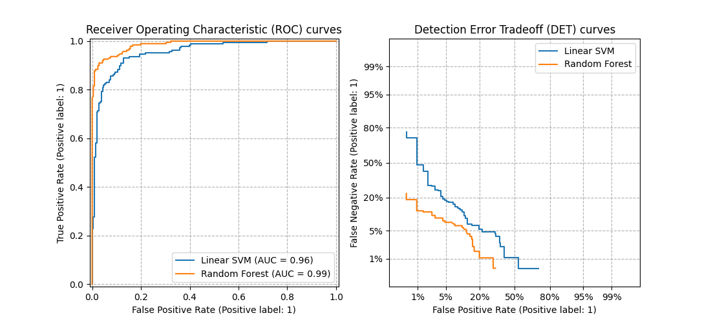

3.4. المقاييس والتهديف: تحديد جودة التنبؤات#
هناك 3 واجهات برمجة تطبيقات مختلفة لتقييم جودة تنبؤات النموذج:
طريقة التهديف للمقدر: للمقدرات طريقة
scoreتُوفر معيار تقييم افتراضي للمشكلة التي تم تصميمها لحلها. لا تتم مناقشة هذا في هذه الصفحة، ولكن في وثائق كل مقدر.معلمة التهديف: تعتمد أدوات تقييم النموذج التي تستخدم التحقق المتبادل (مثل
model_selection.cross_val_scoreوmodel_selection.GridSearchCV) على إستراتيجية تهديف داخلية. تمت مناقشة هذا في القسم معلمة scoring: تعريف قواعد تقييم النموذج.وظائف المقياس: تُطبق الوحدة
sklearn.metricsوظائف تُقيّم خطأ التنبؤ لأغراض مُحدّدة. هذه المقاييس مُفصلة في الأقسام الخاصة بـ مقاييس التصنيف و مقاييس ترتيب متعددة التسميات و مقاييس الانحدار و مقاييس التجميع.
أخيرًا، تُعد مقدرات وهمية مفيدة للحصول على قيمة أساسية لهذه المقاييس للتنبؤات العشوائية.
شاهد أيضا
للحصول على مقاييس "زوجية"، بين العينات وليس المقدرات أو التنبؤات، انظر قسم مقاييس المقارنة الزوجية، والصلات، والنوى (Kernels).
3.4.1. معلمة scoring: تعريف قواعد تقييم النموذج#
يأخذ اختيار النموذج وتقييمه باستخدام أدوات، مثل model_selection.GridSearchCV و model_selection.cross_val_score، معلمة scoring التي تتحكم في المقياس الذي تُطبقه على المقدرات التي تم تقييمها.
3.4.1.1. الحالات الشائعة: القيم المُعرّفة مسبقًا#
بالنسبة لأكثر حالات الاستخدام شيوعًا، يمكنك تعيين كائن هدّاف باستخدام المعلمة scoring؛ يُظهر الجدول أدناه جميع القيم المُمكنة. تتبع جميع كائنات الهدّاف الاتفاقية التي تنص على أن قيم الإرجاع الأعلى أفضل من قيم الإرجاع الأقل. وبالتالي، فإن المقاييس التي تقيس المسافة بين النموذج والبيانات، مثل metrics.mean_squared_error، متاحة كـ neg_mean_squared_error التي تُعيد القيمة السالبة للمقياس.
التهديف |
الوظيفة |
التعليق |
|---|---|---|
التصنيف |
||
'accuracy' |
||
'balanced_accuracy' |
||
'top_k_accuracy' |
||
'average_precision' |
||
'neg_brier_score' |
||
'f1' |
للأهداف الثنائية |
|
'f1_micro' |
متوسط دقيق |
|
'f1_macro' |
متوسط كلي |
|
'f1_weighted' |
متوسط مرجح |
|
'f1_samples' |
حسب عينة متعددة التسميات |
|
'neg_log_loss' |
يتطلب دعم |
|
'precision' إلخ. |
تنطبق اللواحق كما هو الحال مع 'f1' |
|
'recall' إلخ. |
تنطبق اللواحق كما هو الحال مع 'f1' |
|
'jaccard' إلخ. |
تنطبق اللواحق كما هو الحال مع 'f1' |
|
'roc_auc' |
||
'roc_auc_ovr' |
||
'roc_auc_ovo' |
||
'roc_auc_ovr_weighted' |
||
'roc_auc_ovo_weighted' |
||
'd2_log_loss_score' |
||
التجميع |
||
'adjusted_mutual_info_score' |
||
'adjusted_rand_score' |
||
'completeness_score' |
||
'fowlkes_mallows_score' |
||
'homogeneity_score' |
||
'mutual_info_score' |
||
'normalized_mutual_info_score' |
||
'rand_score' |
||
'v_measure_score' |
||
الانحدار |
||
'explained_variance' |
||
'neg_max_error' |
||
'neg_mean_absolute_error' |
||
'neg_mean_squared_error' |
||
'neg_root_mean_squared_error' |
||
'neg_mean_squared_log_error' |
||
'neg_root_mean_squared_log_error' |
||
'neg_median_absolute_error' |
||
'r2' |
||
'neg_mean_poisson_deviance' |
||
'neg_mean_gamma_deviance' |
||
'neg_mean_absolute_percentage_error' |
||
'd2_absolute_error_score' |
أمثلة الاستخدام:
>>> from sklearn import svm, datasets
>>> from sklearn.model_selection import cross_val_score
>>> X, y = datasets.load_iris(return_X_y=True)
>>> clf = svm.SVC(random_state=0)
>>> cross_val_score(clf, X, y, cv=5, scoring='recall_macro')
array([0.96..., 0.96..., 0.96..., 0.93..., 1. ])
ملاحظة
إذا تم تمرير اسم تهديف خاطئ، فسيتم طرح InvalidParameterError. يمكنك استرداد أسماء جميع الهدّافين المُتاحين عن طريق استدعاء get_scorer_names.
3.4.1.2. تعريف إستراتيجية التهديف الخاصة بك من وظائف المقياس#
لا يتم تنفيذ وظائف المقاييس التالية كهدّافين مُسمّين، أحيانًا لأنها تتطلب معلمات إضافية، مثل fbeta_score. لا يمكن تمريرها إلى معلمات scoring؛ بدلاً من ذلك، يجب تمرير وظيفتها القابلة للاستدعاء إلى make_scorer جنبًا إلى جنب مع قيمة المعلمات التي يُمكن للمستخدم ضبطها.
إحدى حالات الاستخدام النموذجية هي تغليف دالة مقياس موجودة من المكتبة بقيم غير افتراضية لمعلماتها، مثل المعلمة beta لدالة fbeta_score:
>>> from sklearn.metrics import fbeta_score, make_scorer
>>> ftwo_scorer = make_scorer(fbeta_score, beta=2)
>>> from sklearn.model_selection import GridSearchCV
>>> from sklearn.svm import LinearSVC
>>> grid = GridSearchCV(LinearSVC(), param_grid={'C': [1, 10]},
... scoring=ftwo_scorer, cv=5)
تكشف الوحدة sklearn.metrics أيضًا عن مجموعة من الوظائف البسيطة التي تقيس خطأ التنبؤ بالنظر إلى القيمة الحقيقية والتنبؤ:
تُعيد الدوال التي تنتهي بـ
_scoreقيمة لتعظيمها، فكلما زادت قيمتها كان ذلك أفضل.تُعيد الدوال التي تنتهي بـ
_errorأو_lossأو_devianceقيمة للتقليل منها، فكلما قلت قيمتها كان ذلك أفضل. عند التحويل إلى كائن هدّاف باستخدامmake_scorer، قم بتعيين المعلمةgreater_is_betterإلىFalse(Trueافتراضيًا؛ انظر وصف المعلمة أدناه).
كائنات هدّاف مخصصة#
حالة الاستخدام الثانية هي بناء كائن هدّاف مخصص تمامًا من دالة بايثون بسيطة باستخدام make_scorer، والتي يمكن أن تأخذ عدة معلمات:
دالة بايثون التي تُريد استخدامها (
my_custom_loss_funcفي المثال أدناه)ما إذا كانت دالة بايثون تُعيد درجة (
greater_is_better=True، الافتراضي) أو خسارة (greater_is_better=False). في حالة الخسارة، يتم عكس ناتج دالة بايثون بواسطة كائن الهدّاف، بما يتوافق مع اتفاقية التحقق المتبادل التي تُعيد الهدّافين قيمًا أعلى للنماذج الأفضل.لمقاييس التصنيف فقط: ما إذا كانت دالة بايثون التي قدمتها تتطلب يقين قرارات مستمرة. إذا كانت دالة التهديف تقبل فقط تقديرات الاحتمالية (مثل
metrics.log_loss)، فيجب على المرء تعيين المعلمةresponse_method، وبالتالي في هذه الحالةresponse_method="predict_proba". لا تتطلب بعض دوال التهديف بالضرورة تقديرات احتمالية، بل تتطلب قيم قرار غير عتبة (مثلmetrics.roc_auc_score). في هذه الحالة، يُوفّر المرء قائمة مثلresponse_method=["decision_function", "predict_proba"]. في هذه الحالة، سيستخدم الهدّاف الطريقة الأولى المُتاحة، بالترتيب الوارد في القائمة، لحساب الدرجات.أي معلمات إضافية، مثل
betaأوlabelsفيf1_score.
فيما يلي مثال على بناء هدّافين مخصصين، وعلى استخدام المعلمة greater_is_better:
>>> import numpy as np
>>> def my_custom_loss_func(y_true, y_pred):
... diff = np.abs(y_true - y_pred).max()
... return np.log1p(diff)
...
>>> # ستعكس الدرجة قيمة الإرجاع لـ my_custom_loss_func،
>>> # والتي ستكون np.log(2)، 0.693، بالنظر إلى القيم لـ X
>>> # و y المُعرّفة أدناه.
>>> score = make_scorer(my_custom_loss_func, greater_is_better=False)
>>> X = [[1], [1]]
>>> y = [0, 1]
>>> from sklearn.dummy import DummyClassifier
>>> clf = DummyClassifier(strategy='most_frequent', random_state=0)
>>> clf = clf.fit(X, y)
>>> my_custom_loss_func(y, clf.predict(X))
0.69...
>>> score(clf, X, y)
-0.69...
3.4.1.3. تنفيذ كائن التهديف الخاص بك#
يمكنك إنشاء هدّافين نماذج أكثر مرونة من خلال إنشاء كائن التهديف الخاص بك من البداية، دون استخدام مصنع make_scorer.
كيفية بناء هدّاف من البداية#
لكي يكون العنصر القابل للاستدعاء هدّافًا، يجب أن يفي بالبروتوكول المُحدّد بالقاعدتين التاليتين:
يمكن استدعاؤه بالمعلمات
(estimator, X, y)، حيثestimatorهو النموذج الذي يجب تقييمه،Xهي بيانات التحقق من الصحة، وyهو الهدف الحقيقي لـX(في الحالة الخاضعة للإشراف) أوNone(في الحالة غير الخاضعة للإشراف).يُعيد رقمًا عشريًا يُحدّد جودة تنبؤ
estimatorعلىX، بالرجوع إلىy. مرة أخرى، وفقًا للاتفاقية، الأرقام الأعلى أفضل، لذلك إذا أعاد هدّافك خسارة، فيجب عكس تلك القيمة.متقدم: إذا كان يتطلب تمرير بيانات وصفية إضافية إليه، فيجب أن يكشف عن طريقة
get_metadata_routingتُعيد البيانات الوصفية المطلوبة. يجب أن يكون المستخدم قادرًا على تعيين البيانات الوصفية المطلوبة عبر طريقةset_score_request. يرجى مراجعة دليل المستخدم و دليل المطور لمزيد من التفاصيل.
ملاحظة
استخدام هدّافين مخصصين في الدوال حيث n_jobs > 1
بينما يجب أن يعمل تعريف دالة التهديف المخصصة جنبًا إلى جنب مع دالة الاستدعاء بشكل افتراضي مع الواجهة الخلفية الافتراضية لـ joblib (loky)، فإن استيرادها من وحدة نمطية أخرى سيكون نهجًا أكثر قوة وسيعمل بشكل مستقل عن الواجهة الخلفية لـ joblib.
على سبيل المثال، لاستخدام n_jobs أكبر من 1 في المثال أدناه، يتم حفظ دالة custom_scoring_function في وحدة نمطية أنشأها المستخدم (custom_scorer_module.py) ويتم استيرادها:
>>> from custom_scorer_module import custom_scoring_function
>>> cross_val_score(model,
... X_train,
... y_train,
... scoring=make_scorer(custom_scoring_function, greater_is_better=False),
... cv=5,
... n_jobs=-1)
3.4.1.4. استخدام تقييم متعدد المقاييس#
تسمح Scikit-learn أيضًا بتقييم مقاييس متعددة في GridSearchCV و RandomizedSearchCV و cross_validate.
هناك ثلاث طرق لتحديد مقاييس تهديف متعددة لمعلمة scoring:
كقيمة قابلة للتكرار لمقاييس السلسلة:
>>> scoring = ['accuracy', 'precision']
كقاموس
dictيقوم بتعيين اسم الهدّاف إلى دالة التهديف:>>> from sklearn.metrics import accuracy_score >>> from sklearn.metrics import make_scorer >>> scoring = {'accuracy': make_scorer(accuracy_score), ... 'prec': 'precision'}
لاحظ أن قيم القاموس يُمكن أن تكون إما دوال هدّاف أو إحدى سلاسل المقاييس المُعرّفة مسبقًا.
كقيمة قابلة للاستدعاء تُعيد قاموسًا من الدرجات:
>>> from sklearn.model_selection import cross_validate >>> from sklearn.metrics import confusion_matrix >>> # عينة من مجموعة بيانات تصنيف ثنائية >>> X, y = datasets.make_classification(n_classes=2, random_state=0) >>> svm = LinearSVC(random_state=0) >>> def confusion_matrix_scorer(clf, X, y): ... y_pred = clf.predict(X) ... cm = confusion_matrix(y, y_pred) ... return {'tn': cm[0, 0], 'fp': cm[0, 1], ... 'fn': cm[1, 0], 'tp': cm[1, 1]} >>> cv_results = cross_validate(svm, X, y, cv=5, ... scoring=confusion_matrix_scorer) >>> # الحصول على درجات الإيجابيات الحقيقية لمجموعة الاختبار >>> print(cv_results['test_tp']) [10 9 8 7 8] >>> # الحصول على درجات السلبيات الخاطئة لمجموعة الاختبار >>> print(cv_results['test_fn']) [0 1 2 3 2]
3.4.2. مقاييس التصنيف#
تُطبق الوحدة sklearn.metrics العديد من وظائف الخسارة والتهديف والأداة المساعدة لقياس أداء التصنيف. قد تتطلب بعض المقاييس تقديرات احتمالية للفئة الإيجابية أو قيم الثقة أو قيم القرارات الثنائية. تسمح معظم التطبيقات لكل عينة بتقديم مساهمة مرجحة في الدرجة الإجمالية، من خلال المعلمة sample_weight.
بعضها يقتصر على حالة التصنيف الثنائي:
|
Compute precision-recall pairs for different probability thresholds. |
|
Compute Receiver operating characteristic (ROC). |
|
Compute binary classification positive and negative likelihood ratios. |
|
Compute error rates for different probability thresholds. |
يعمل البعض الآخر أيضًا في حالة متعددة الفئات:
|
Compute the balanced accuracy. |
|
Compute Cohen's kappa: a statistic that measures inter-annotator agreement. |
|
Compute confusion matrix to evaluate the accuracy of a classification. |
|
Average hinge loss (non-regularized). |
|
Compute the Matthews correlation coefficient (MCC). |
|
Compute Area Under the Receiver Operating Characteristic Curve (ROC AUC) from prediction scores. |
|
Top-k Accuracy classification score. |
يعمل البعض أيضًا في حالة متعددة التسميات:
|
Accuracy classification score. |
|
Build a text report showing the main classification metrics. |
|
Compute the F1 score, also known as balanced F-score or F-measure. |
|
Compute the F-beta score. |
|
Compute the average Hamming loss. |
|
Jaccard similarity coefficient score. |
|
Log loss, aka logistic loss or cross-entropy loss. |
|
Compute a confusion matrix for each class or sample. |
|
Compute precision, recall, F-measure and support for each class. |
|
Compute the precision. |
|
Compute the recall. |
|
Compute Area Under the Receiver Operating Characteristic Curve (ROC AUC) from prediction scores. |
|
Zero-one classification loss. |
|
\(D^2\) score function, fraction of log loss explained. |
وبعضها يعمل مع مشاكل ثنائية ومتعددة التسميات (ولكن ليس متعددة الفئات):
|
Compute average precision (AP) from prediction scores. |
في الأقسام الفرعية التالية، سنصف كل دالة من هذه الدوال، مسبوقة ببعض الملاحظات حول واجهة برمجة التطبيقات الشائعة وتعريف المقياس.
3.4.2.1. من ثنائي إلى متعدد الفئات ومتعدد التسميات#
يتم تعريف بعض المقاييس بشكل أساسي لمهام التصنيف الثنائي (مثل f1_score، roc_auc_score). في هذه الحالات، يتم افتراضيًا تقييم التسمية الإيجابية فقط، بافتراض أن الفئة الإيجابية مُعلمة بـ 1 (على الرغم من أن هذا قد يكون قابلاً للتكوين من خلال المعلمة pos_label).
عند توسيع مقياس ثنائي لمشاكل متعددة الفئات أو متعددة التسميات، يتم التعامل مع البيانات كمجموعة من المشاكل الثنائية، واحدة لكل فئة. ثم هناك عدد من الطرق لمتوسط حسابات المقياس الثنائي عبر مجموعة الفئات، كل منها قد يكون مفيدًا في بعض السيناريوهات. حيثما أمكن، يجب عليك الاختيار من بينها باستخدام المعلمة average.
"macro"يحسب ببساطة متوسط المقاييس الثنائية، مع إعطاء وزن متساوٍ لكل فئة. في المشاكل التي تكون فيها الفئات غير المتكررة مهمة مع ذلك، قد يكون المتوسط الكلي وسيلة لتسليط الضوء على أدائها. من ناحية أخرى، غالبًا ما يكون افتراض أن جميع الفئات متساوية الأهمية غير صحيح، بحيث أن المتوسط الكلي سيُبالغ في التأكيد على الأداء المنخفض عادةً على فئة غير متكررة."weighted"يأخذ في الاعتبار عدم توازن الفئات عن طريق حساب متوسط المقاييس الثنائية حيث يتم ترجيح درجة كل فئة بوجودها في عينة البيانات الحقيقية."micro"يُعطي كل زوج من فئة العينة مساهمة متساوية في المقياس الإجمالي (باستثناء نتيجة وزن العينة). بدلاً من جمع المقياس لكل فئة، يقوم هذا بجمع الأرباح والقواسم التي تُشكل المقاييس لكل فئة لحساب حاصل قسمة إجمالي. قد يُفضّل المتوسط الدقيق في إعدادات متعددة التسميات، بما في ذلك التصنيف متعدد الفئات حيث سيتم تجاهل فئة الأغلبية."samples"ينطبق فقط على مشاكل متعددة التسميات. لا يحسب مقياسًا لكل فئة، بل يحسب المقياس على الفئات الحقيقية والمتوقعة لكل عينة في بيانات التقييم، ويُعيد متوسطها (المرجح بـsample_weight).سيؤدي تحديد
average=Noneإلى إرجاع مصفوفة مع الدرجة لكل فئة.
بينما يتم توفير بيانات متعددة الفئات للمقياس، مثل الأهداف الثنائية، كمصفوفة من تسميات الفئات، يتم تحديد البيانات متعددة التسميات كمصفوفة مؤشر، حيث تكون الخلية [i, j] بقيمة 1 إذا كانت العينة i تحمل التسمية j وقيمة 0 بخلاف ذلك.
3.4.2.2. درجة الدقة#
تحسب الدالة accuracy_score الدقة، إما الكسر (افتراضيًا) أو العدد (normalize=False) من التنبؤات الصحيحة.
في التصنيف متعدد التسميات، تُعيد الدالة دقة المجموعة الفرعية. إذا تطابقت مجموعة التسميات المتوقعة لعينة ما تمامًا مع مجموعة التسميات الحقيقية، فإن دقة المجموعة الفرعية هي 1.0؛ بخلاف ذلك، فهي 0.0.
إذا كانت \(\hat{y}_i\) هي القيمة المتوقعة للعينة \(i\) و \(y_i\) هي القيمة الحقيقية المقابلة، فسيتم تعريف كسر التنبؤات الصحيحة على \(n_\text{samples}\) على النحو التالي:
حيث \(1(x)\) هي دالة المؤشر.
>>> import numpy as np
>>> from sklearn.metrics import accuracy_score
>>> y_pred = [0, 2, 1, 3]
>>> y_true = [0, 1, 2, 3]
>>> accuracy_score(y_true, y_pred)
0.5
>>> accuracy_score(y_true, y_pred, normalize=False)
2.0
في حالة متعددة التسميات مع مؤشرات تسمية ثنائية:
>>> accuracy_score(np.array([[0, 1], [1, 1]]), np.ones((2, 2)))
0.5
أمثلة
انظر Test with permutations the significance of a classification score للحصول على مثال على استخدام درجة الدقة باستخدام تباديل مجموعة البيانات.
3.4.2.3. درجة دقة أعلى k#
الدالة top_k_accuracy_score هي تعميم لـ accuracy_score. الفرق هو أن التنبؤ يُعتبر صحيحًا طالما أن التسمية الحقيقية مرتبطة بواحدة من أعلى k درجات متوقعة. accuracy_score هي الحالة الخاصة لـ k = 1.
تُغطي الدالة حالات التصنيف الثنائي ومتعدد الفئات ولكن ليس حالة متعددة التسميات.
إذا كانت \(\hat{f}_{i,j}\) هي الفئة المتوقعة للعينة \(i\) المقابلة لأكبر درجة متوقعة \(j\) و \(y_i\) هي القيمة الحقيقية المقابلة، فسيتم تعريف كسر التنبؤات الصحيحة على \(n_\text{samples}\) على النحو التالي:
حيث \(k\) هو عدد التخمينات المسموح بها و \(1(x)\) هي دالة المؤشر.
>>> import numpy as np
>>> from sklearn.metrics import top_k_accuracy_score
>>> y_true = np.array([0, 1, 2, 2])
>>> y_score = np.array([[0.5, 0.2, 0.2],
... [0.3, 0.4, 0.2],
... [0.2, 0.4, 0.3],
... [0.7, 0.2, 0.1]])
>>> top_k_accuracy_score(y_true, y_score, k=2)
0.75
>>> # عدم التطبيع يُعطي عدد العينات المصنفة "بشكل صحيح"
>>> top_k_accuracy_score(y_true, y_score, k=2, normalize=False)
3
3.4.2.4. درجة الدقة المتوازنة#
تحسب الدالة balanced_accuracy_score الدقة المتوازنة، والتي تتجنب تقديرات الأداء المُبالغ فيها على مجموعات البيانات غير المتوازنة. وهو المتوسط الكلي لدرجات الاستدعاء لكل فئة أو، على نحو مكافئ، الدقة الأولية حيث يتم ترجيح كل عينة وفقًا للانتشار العكسي لفئتها الحقيقية. وبالتالي، بالنسبة لمجموعات البيانات المتوازنة، فإن الدرجة تساوي الدقة.
في الحالة الثنائية، تساوي الدقة المتوازنة المتوسط الحسابي لـ الحساسية (معدل الإيجابيات الحقيقية) و النوعية (معدل السلبيات الحقيقية)، أو المنطقة الواقعة أسفل منحنى ROC مع تنبؤات ثنائية بدلاً من الدرجات:
إذا كان المصنف يؤدي أداءً جيدًا على قدم المساواة في أي من الفئتين، فإن هذا المصطلح ينخفض إلى الدقة التقليدية (أي عدد التنبؤات الصحيحة مقسومًا على إجمالي عدد التنبؤات).
في المقابل، إذا كانت الدقة التقليدية أعلى من الصدفة فقط لأن المصنف يستفيد من مجموعة اختبار غير متوازنة، فإن الدقة المتوازنة، حسب الاقتضاء، ستنخفض إلى \(\frac{1}{n\_classes}\).
يتراوح النطاق من 0 إلى 1، أو عندما يتم استخدام adjusted=True، يتم إعادة قياسه إلى النطاق \(\frac{1}{1 - n\_classes}\) إلى 1، شامل، مع أداء عند التهديف العشوائي 0.
إذا كانت \(y_i\) هي القيمة الحقيقية للعينة \(i\)، و \(w_i\) هو وزن العينة المقابل، فإننا نضبط وزن العينة على:
حيث \(1(x)\) هي دالة المؤشر. بالنظر إلى التنبؤ \(\hat{y}_i\) للعينة \(i\)، يتم تعريف الدقة المتوازنة على النحو التالي:
مع adjusted=True، تُبلغ الدقة المتوازنة عن الزيادة النسبية من \(\texttt{balanced-accuracy}(y, \mathbf{0}, w) =
\frac{1}{n\_classes}\). في الحالة الثنائية، يُعرف هذا أيضًا باسم *إحصائية J ليودن*، أو المعلوماتية.
ملاحظة
يبدو تعريف متعدد الفئات هنا بمثابة التمديد الأكثر منطقية للمقياس المُستخدم في التصنيف الثنائي، على الرغم من عدم وجود إجماع مُؤكّد في الأدبيات:
تعريفنا: [Mosley2013]، [Kelleher2015] و [Guyon2015]، حيث يتبنى [Guyon2015] الإصدار المعدل لضمان أن يكون للتنبؤات العشوائية درجة \(0\) وللتنبؤات المثالية درجة \(1\).
دقة توازن الفئات كما هو موضح في [Mosley2013]: يتم حساب الحد الأدنى بين الدقة والاستدعاء لكل فئة. ثم يتم حساب متوسط هذه القيم على إجمالي عدد الفئات للحصول على الدقة المتوازنة.
الدقة المتوازنة كما هو موضح في [Urbanowicz2015]: يتم حساب متوسط الحساسية والنوعية لكل فئة ثم حساب متوسطها على إجمالي عدد الفئات.
المراجع
I. Guyon, K. Bennett, G. Cawley, H.J. Escalante, S. Escalera, T.K. Ho, N. Macià, B. Ray, M. Saeed, A.R. Statnikov, E. Viegas, Design of the 2015 ChaLearn AutoML Challenge, IJCNN 2015.
John. D. Kelleher, Brian Mac Namee, Aoife D'Arcy, Fundamentals of Machine Learning for Predictive Data Analytics: Algorithms, Worked Examples, and Case Studies, 2015.
Urbanowicz R.J., Moore, J.H. ExSTraCS 2.0: description and evaluation of a scalable learning classifier system, Evol. Intel. (2015) 8: 89.
3.4.2.5. كابا كوهين#
تحسب الدالة cohen_kappa_score إحصائية كابا كوهين. يهدف هذا المقياس إلى مقارنة عمليات التوسيم بواسطة مُعلّمين بشريين مختلفين، وليس مُصنفًا مقابل القيمة الحقيقية.
درجة كابا هي رقم بين -1 و 1. تُعتبر الدرجات التي تزيد عن 0.8 اتفاقًا جيدًا بشكل عام؛ الصفر أو أقل يعني عدم وجود اتفاق يعني عدم وجود اتفاق (تسميات عشوائية عمليًا).
يمكن حساب درجات كابا للمشاكل الثنائية أو متعددة الفئات، ولكن ليس لمشاكل متعددة التسميات (إلا عن طريق حساب درجة لكل تسمية يدويًا) وليس لأكثر من مُعلّمين.
>>> from sklearn.metrics import cohen_kappa_score
>>> labeling1 = [2, 0, 2, 2, 0, 1]
>>> labeling2 = [0, 0, 2, 2, 0, 2]
>>> cohen_kappa_score(labeling1, labeling2)
0.4285714285714286
3.4.2.6. مصفوفة الارتباك#
تُقيّم الدالة confusion_matrix دقة التصنيف عن طريق حساب مصفوفة الارتباك مع كل صف يقابل الفئة الحقيقية (قد تستخدم ويكيبيديا والمراجع الأخرى اصطلاحًا مختلفًا للمحاور).
بحكم التعريف، فإن الإدخال \(i, j\) في مصفوفة الارتباك هو عدد المشاهدات الموجودة فعليًا في المجموعة \(i\)، ولكن تم التنبؤ بأنها في المجموعة \(j\). هنا مثال:
>>> from sklearn.metrics import confusion_matrix
>>> y_true = [2, 0, 2, 2, 0, 1]
>>> y_pred = [0, 0, 2, 2, 0, 2]
>>> confusion_matrix(y_true, y_pred)
array([[2, 0, 0],
[0, 0, 1],
[1, 0, 2]])
يمكن استخدام ConfusionMatrixDisplay لتمثيل مصفوفة الارتباك بصريًا كما هو موضح في مثال Confusion matrix، الذي ينشئ الشكل التالي:
تسمح المعلمة normalize بالإبلاغ عن النسب بدلاً من الأعداد. يمكن تطبيع مصفوفة الارتباك بثلاث طرق مختلفة: 'pred' و 'true' و 'all' والتي ستقسم الأعداد على مجموع كل أعمدة أو صفوف أو المصفوفة بأكملها، على التوالي.
>>> y_true = [0, 0, 0, 1, 1, 1, 1, 1]
>>> y_pred = [0, 1, 0, 1, 0, 1, 0, 1]
>>> confusion_matrix(y_true, y_pred, normalize='all')
array([[0.25 , 0.125],
[0.25 , 0.375]])
بالنسبة للمشاكل الثنائية، يمكننا الحصول على أعداد السلبيات الحقيقية والإيجابيات الخاطئة والسلبيات الخاطئة والإيجابيات الحقيقية على النحو التالي:
>>> y_true = [0, 0, 0, 1, 1, 1, 1, 1]
>>> y_pred = [0, 1, 0, 1, 0, 1, 0, 1]
>>> tn, fp, fn, tp = confusion_matrix(y_true, y_pred).ravel()
>>> tn, fp, fn, tp
(2, 1, 2, 3)
أمثلة
انظر Confusion matrix للحصول على مثال على استخدام مصفوفة الارتباك لتقييم جودة ناتج المصنف.
انظر Recognizing hand-written digits للحصول على مثال على استخدام مصفوفة الارتباك لتصنيف الأرقام المكتوبة بخط اليد.
انظر Classification of text documents using sparse features للحصول على مثال على استخدام مصفوفة الارتباك لتصنيف المستندات النصية.
3.4.2.7. تقرير التصنيف#
تنشئ الدالة classification_report تقريرًا نصيًا يُظهر مقاييس التصنيف الرئيسية. هنا مثال صغير مع target_names مخصصة وتسميات مُستنتجة:
>>> from sklearn.metrics import classification_report
>>> y_true = [0, 1, 2, 2, 0]
>>> y_pred = [0, 0, 2, 1, 0]
>>> target_names = ['class 0', 'class 1', 'class 2']
>>> print(classification_report(y_true, y_pred, target_names=target_names))
precision recall f1-score support
class 0 0.67 1.00 0.80 2
class 1 0.00 0.00 0.00 1
class 2 1.00 0.50 0.67 2
accuracy 0.60 5
macro avg 0.56 0.50 0.49 5
weighted avg 0.67 0.60 0.59 5
أمثلة
انظر Recognizing hand-written digits للحصول على مثال على استخدام تقرير التصنيف للأرقام المكتوبة بخط اليد.
انظر Custom refit strategy of a grid search with cross-validation للحصول على مثال على استخدام تقرير التصنيف للبحث الشبكي مع التحقق المتبادل المتداخل.
3.4.2.8. خسارة هامينغ#
تحسب hamming_loss متوسط خسارة هامينغ أو مسافة هامينغ بين مجموعتين من العينات.
إذا كانت \(\hat{y}_{i,j}\) هي القيمة المتوقعة للتسمية \(j\) لعينة مُعطاة \(i\)، \(y_{i,j}\) هي القيمة الحقيقية المقابلة، \(n_\text{samples}\) هو عدد العينات و \(n_\text{labels}\) هو عدد التسميات، فسيتم تعريف خسارة هامينغ \(L_{Hamming}\) على النحو التالي:
حيث \(1(x)\) هي دالة المؤشر.
لا تصح المعادلة أعلاه في حالة التصنيف متعدد الفئات. يرجى الرجوع إلى الملاحظة أدناه لمزيد من المعلومات.
>>> from sklearn.metrics import hamming_loss
>>> y_pred = [1, 2, 3, 4]
>>> y_true = [2, 2, 3, 4]
>>> hamming_loss(y_true, y_pred)
0.25
في حالة متعددة التسميات مع مؤشرات تسمية ثنائية:
>>> hamming_loss(np.array([[0, 1], [1, 1]]), np.zeros((2, 2)))
0.75
ملاحظة
في التصنيف متعدد الفئات، تتوافق خسارة هامينغ مع مسافة هامينغ بين y_true و y_pred والتي تُشبه دالة خسارة الصفر-واحد. ومع ذلك، بينما تُعاقب خسارة الصفر-واحد مجموعات التنبؤ التي لا تتطابق تمامًا مع المجموعات الحقيقية، تُعاقب خسارة هامينغ التسميات الفردية. وبالتالي، فإن خسارة هامينغ، التي يحدها من الأعلى خسارة الصفر-واحد، تكون دائمًا بين الصفر والواحد، شامل؛ والتنبؤ بمجموعة فرعية مناسبة أو مجموعة شاملة من التسميات الحقيقية سيعطي خسارة هامينغ بين الصفر والواحد، باستثناء.
3.4.2.9. الدقة والاستدعاء ومقاييس F#
بشكل بديهي، الدقة هي قدرة المصنف على عدم تسمية عينة سلبية على أنها إيجابية، و الاستدعاء هو قدرة المصنف على إيجاد جميع العينات الإيجابية.
مقياس F (\(F_\beta\) و \(F_1\) يقيس) يمكن تفسيره على أنه متوسط توافقي مرجح للدقة والاستدعاء. يصل مقياس \(F_\beta\) إلى أفضل قيمة له عند 1 وأسوأ درجة له عند 0. مع \(\beta = 1\)، يكون \(F_\beta\) و \(F_1\) متكافئين، ويكون الاستدعاء والدقة بنفس القدر من الأهمية.
تحسب precision_recall_curve منحنى دقة-استدعاء من تسمية القيمة الحقيقية ودرجة مُعطاة بواسطة المصنف عن طريق تغيير عتبة القرار.
تحسب الدالة average_precision_score متوسط الدقة (AP) من درجات التنبؤ. القيمة بين 0 و 1 والأعلى أفضل. يتم تعريف AP على النحو التالي:
حيث \(P_n\) و \(R_n\) هما الدقة والاستدعاء عند العتبة n. مع التنبؤات العشوائية، فإن AP هو كسر العينات الإيجابية.
تُقدّم المراجع [Manning2008] و [Everingham2010] متغيرات بديلة لـ AP تُقحم منحنى الدقة-الاستدعاء. حاليًا، لا تُطبّق average_precision_score أي متغير مُقحم. تصف المراجع [Davis2006] و [Flach2015] سبب توفير الاستيفاء الخطي للنقاط على منحنى الدقة-الاستدعاء مقياسًا مُتفائلًا بشكل مُفرط لأداء المصنف. يتم استخدام هذا الاستيفاء الخطي عند حساب المنطقة الواقعة أسفل المنحنى باستخدام قاعدة شبه المنحرف في auc.
تسمح لك العديد من الدوال بتحليل درجة الدقة والاستدعاء ومقاييس F:
|
Compute average precision (AP) from prediction scores. |
|
Compute the F1 score, also known as balanced F-score or F-measure. |
|
Compute the F-beta score. |
|
Compute precision-recall pairs for different probability thresholds. |
|
Compute precision, recall, F-measure and support for each class. |
|
Compute the precision. |
|
Compute the recall. |
لاحظ أن الدالة precision_recall_curve تقتصر على الحالة الثنائية. تدعم الدالة average_precision_score التنسيقات متعددة الفئات ومتعددة التسميات عن طريق حساب كل درجة فئة بطريقة واحد مقابل البقية (OvR) ومتوسطها أو عدم متوسطها اعتمادًا على قيمة وسيطة average.
ستقوم الدالتان PrecisionRecallDisplay.from_estimator و PrecisionRecallDisplay.from_predictions برسم منحنى الدقة والاستدعاء كما يلي.
أمثلة
انظر Custom refit strategy of a grid search with cross-validation للحصول على مثال على استخدام
precision_scoreوrecall_scoreلتقدير المعلمات باستخدام البحث الشبكي مع التحقق المتبادل المتداخل.انظر Precision-Recall للحصول على مثال على استخدام
precision_recall_curveلتقييم جودة ناتج المصنف.
المراجع
C.D. Manning, P. Raghavan, H. Schütze, Introduction to Information Retrieval, 2008.
M. Everingham, L. Van Gool, C.K.I. Williams, J. Winn, A. Zisserman, The Pascal Visual Object Classes (VOC) Challenge, IJCV 2010.
J. Davis, M. Goadrich, The Relationship Between Precision-Recall and ROC Curves, ICML 2006.
P.A. Flach, M. Kull, Precision-Recall-Gain Curves: PR Analysis Done Right, NIPS 2015.
3.4.2.9.1. التصنيف الثنائي#
في مهمة التصنيف الثنائي، يشير المصطلحان "إيجابي" و "سلبي" إلى تنبؤ المصنف، ويشير المصطلحان "صحيح" و "خاطئ" إلى ما إذا كان هذا التنبؤ يتوافق مع الحكم الخارجي (يُعرف أحيانًا باسم "المشاهدة"). بالنظر إلى هذه التعريفات، يمكننا صياغة الجدول التالي:
في هذا السياق، يمكننا تعريف مفاهيم الدقة والاستدعاء:
(أحيانًا يُطلق على الاستدعاء أيضًا "الحساسية")
مقياس F هو المتوسط التوافقي المرجح للدقة والاستدعاء، مع مساهمة الدقة في المتوسط المرجح بواسطة معلمة \(\beta\):
لتجنب القسمة على صفر عندما تكون الدقة والاستدعاء صفرًا، تحسب Scikit-Learn مقياس F باستخدام هذه الصيغة المكافئة:
لاحظ أن هذه الصيغة لا تزال غير مُعرّفة عندما لا توجد إيجابيات حقيقية أو إيجابيات خاطئة أو سلبيات خاطئة. افتراضيًا، يتم حساب F-1 لمجموعة من السلبيات الحقيقية حصريًا على أنه 0، ولكن يمكن تغيير هذا السلوك باستخدام معلمة zero_division.
فيما يلي بعض الأمثلة الصغيرة في التصنيف الثنائي:
>>> from sklearn import metrics
>>> y_pred = [0, 1, 0, 0]
>>> y_true = [0, 1, 0, 1]
>>> metrics.precision_score(y_true, y_pred)
1.0
>>> metrics.recall_score(y_true, y_pred)
0.5
>>> metrics.f1_score(y_true, y_pred)
0.66...
>>> metrics.fbeta_score(y_true, y_pred, beta=0.5)
0.83...
>>> metrics.fbeta_score(y_true, y_pred, beta=1)
0.66...
>>> metrics.fbeta_score(y_true, y_pred, beta=2)
0.55...
>>> metrics.precision_recall_fscore_support(y_true, y_pred, beta=0.5)
(array([0.66..., 1. ]), array([1. , 0.5]), array([0.71..., 0.83...]), array([2, 2]))
>>> import numpy as np
>>> from sklearn.metrics import precision_recall_curve
>>> from sklearn.metrics import average_precision_score
>>> y_true = np.array([0, 0, 1, 1])
>>> y_scores = np.array([0.1, 0.4, 0.35, 0.8])
>>> precision, recall, threshold = precision_recall_curve(y_true, y_scores)
>>> precision
array([0.5 , 0.66..., 0.5 , 1. , 1. ])
>>> recall
array([1. , 1. , 0.5, 0.5, 0. ])
>>> threshold
array([0.1 , 0.35, 0.4 , 0.8 ])
>>> average_precision_score(y_true, y_scores)
0.83...
3.4.2.9.2. التصنيف متعدد الفئات ومتعدد التسميات#
في مهمة التصنيف متعدد الفئات ومتعدد التسميات، يمكن تطبيق مفاهيم الدقة والاستدعاء ومقاييس F على كل تسمية بشكل مستقل. هناك بضعة طرق لدمج النتائج عبر التسميات، مُحدّدة بواسطة وسيطة average إلى دوال average_precision_score و f1_score و fbeta_score و precision_recall_fscore_support و precision_score و recall_score، كما هو موضح أعلاه.
لاحظ السلوكيات التالية عند حساب المتوسط:
إذا تم تضمين جميع التسميات، فإن المتوسط "الدقيق" في إعداد متعدد الفئات سينتج دقة واستدعاء و \(F\) متطابقة جميعها مع الدقة.
قد ينتج عن المتوسط "المرجح" درجة F ليست بين الدقة والاستدعاء.
يتم حساب المتوسط "الكلي" لمقاييس F على أنه المتوسط الحسابي على مقاييس F لكل تسمية/فئة، وليس المتوسط التوافقي على المتوسط الحسابي للدقة والاستدعاء. يمكن رؤية كلا الحسابين في الأدبيات ولكنهما غير متكافئين، انظر [OB2019] للتفاصيل.
لتوضيح هذا بشكل أكبر، ضع في اعتبارك الترميز التالي:
\(y\) مجموعة أزواج \((sample, label)\) الحقيقية
\(\hat{y}\) مجموعة أزواج \((sample, label)\) المتوقعة
\(L\) مجموعة التسميات
\(S\) مجموعة العينات
\(y_s\) المجموعة الفرعية من \(y\) مع العينة \(s\)، أي \(y_s := \left\{(s', l) \in y | s' = s\right\}\)
\(y_l\) المجموعة الفرعية من \(y\) مع التسمية \(l\)
وبالمثل، \(\hat{y}_s\) و \(\hat{y}_l\) هما مجموعتان فرعيتان من \(\hat{y}\)
\(P(A, B) := \frac{\left| A \cap B \right|}{\left|B\right|}\) لبعض المجموعات \(A\) و \(B\)
\(R(A, B) := \frac{\left| A \cap B \right|}{\left|A\right|}\) (تختلف الاصطلاحات حول معالجة \(A = \emptyset\)؛ يستخدم هذا التنفيذ \(R(A, B):=0\)، ومثل ذلك بالنسبة لـ \(P\).)
\(F_\beta(A, B) := \left(1 + \beta^2\right) \frac{P(A, B) \times R(A, B)}{\beta^2 P(A, B) + R(A, B)}\)
ثم يتم تعريف المقاييس على النحو التالي:
>>> from sklearn import metrics
>>> y_true = [0, 1, 2, 0, 1, 2]
>>> y_pred = [0, 2, 1, 0, 0, 1]
>>> metrics.precision_score(y_true, y_pred, average='macro')
0.22...
>>> metrics.recall_score(y_true, y_pred, average='micro')
0.33...
>>> metrics.f1_score(y_true, y_pred, average='weighted')
0.26...
>>> metrics.fbeta_score(y_true, y_pred, average='macro', beta=0.5)
0.23...
>>> metrics.precision_recall_fscore_support(y_true, y_pred, beta=0.5, average=None)
(array([0.66..., 0. , 0. ]), array([1., 0., 0.]), array([0.71..., 0. , 0. ]), array([2, 2, 2]...))
بالنسبة للتصنيف متعدد الفئات مع "فئة سلبية"، من الممكن استبعاد بعض التسميات:
>>> metrics.recall_score(y_true, y_pred, labels=[1, 2], average='micro')
... # باستبعاد 0، لم يتم استدعاء أي تسميات بشكل صحيح
0.0
وبالمثل، يمكن حساب التسميات غير الموجودة في عينة البيانات في المتوسط الكلي.
>>> metrics.precision_score(y_true, y_pred, labels=[0, 1, 2, 3], average='macro')
0.166...
المراجع
3.4.2.10. درجة معامل تشابه جاكارد#
تحسب الدالة jaccard_score متوسط معاملات تشابه جاكارد، وتسمى أيضًا مؤشر جاكارد، بين أزواج مجموعات التسميات.
يتم تعريف معامل تشابه جاكارد مع مجموعة تسميات القيمة الحقيقية \(y\) ومجموعة التسميات المتوقعة \(\hat{y}\) على النحو التالي:
تنطبق jaccard_score (مثل precision_recall_fscore_support) بشكل أصلي على الأهداف الثنائية. عن طريق حسابها على أساس المجموعة، يمكن توسيعها لتطبيقها على متعدد التسميات ومتعدد الفئات من خلال استخدام average (انظر أعلاه).
في الحالة الثنائية:
>>> import numpy as np
>>> from sklearn.metrics import jaccard_score
>>> y_true = np.array([[0, 1, 1],
... [1, 1, 0]])
>>> y_pred = np.array([[1, 1, 1],
... [1, 0, 0]])
>>> jaccard_score(y_true[0], y_pred[0])
0.6666...
في حالة المقارنة ثنائية الأبعاد (على سبيل المثال، تشابه الصورة):
>>> jaccard_score(y_true, y_pred, average="micro")
0.6
في حالة متعددة التسميات مع مؤشرات تسمية ثنائية:
>>> jaccard_score(y_true, y_pred, average='samples')
0.5833...
>>> jaccard_score(y_true, y_pred, average='macro')
0.6666...
>>> jaccard_score(y_true, y_pred, average=None)
array([0.5, 0.5, 1. ])
يتم تحويل مشاكل متعددة الفئات إلى ثنائية ومعاملتها مثل مشكلة متعددة التسميات المقابلة:
>>> y_pred = [0, 2, 1, 2]
>>> y_true = [0, 1, 2, 2]
>>> jaccard_score(y_true, y_pred, average=None)
array([1. , 0. , 0.33...])
>>> jaccard_score(y_true, y_pred, average='macro')
0.44...
>>> jaccard_score(y_true, y_pred, average='micro')
0.33...
3.4.2.11. خسارة المفصلة#
تحسب الدالة hinge_loss متوسط المسافة بين النموذج والبيانات باستخدام خسارة المفصلة، وهو مقياس من جانب واحد يأخذ في الاعتبار أخطاء التنبؤ فقط. (تُستخدم خسارة المفصلة في مصنفات الهامش الأقصى مثل آلات متجه الدعم.)
إذا تم ترميز التسمية الحقيقية \(y_i\) لمهمة تصنيف ثنائي على أنها \(y_i=\left\{-1, +1\right\}\) لكل عينة \(i\)؛ و \(w_i\) هو القرار المتوقع المقابل (مصفوفة ذات شكل (n_samples,) كما هو ناتج عن طريقة decision_function)، فسيتم تعريف خسارة المفصلة على النحو التالي:
إذا كان هناك أكثر من تسميتين، فإن hinge_loss تستخدم متغيرًا متعدد الفئات بسبب كرامر وسينغر. هنا الورقة التي تصفها.
في هذه الحالة، يكون القرار المتوقع مصفوفة ذات شكل (n_samples، n_labels). إذا كانت \(w_{i, y_i}\) هي القرار المتوقع للتسمية الحقيقية \(y_i\) للعينة \(i\)؛ و \(\hat{w}_{i, y_i} = \max\left\{w_{i, y_j}~|~y_j \ne y_i \right\}\) هو الحد الأقصى للقرارات المتوقعة لجميع التسميات الأخرى، فسيتم تعريف خسارة المفصلة متعددة الفئات على النحو التالي:
فيما يلي مثال صغير يُوضح استخدام دالة hinge_loss مع مُصنف svm في مشكلة فئة ثنائية:
>>> from sklearn import svm
>>> from sklearn.metrics import hinge_loss
>>> X = [[0], [1]]
>>> y = [-1, 1]
>>> est = svm.LinearSVC(random_state=0)
>>> est.fit(X, y)
LinearSVC(random_state=0)
>>> pred_decision = est.decision_function([[-2], [3], [0.5]])
>>> pred_decision
array([-2.18..., 2.36..., 0.09...])
>>> hinge_loss([-1, 1, 1], pred_decision)
0.3...
فيما يلي مثال يُوضح استخدام دالة hinge_loss مع مُصنف svm في مشكلة متعددة الفئات:
>>> X = np.array([[0], [1], [2], [3]])
>>> Y = np.array([0, 1, 2, 3])
>>> labels = np.array([0, 1, 2, 3])
>>> est = svm.LinearSVC()
>>> est.fit(X, Y)
LinearSVC()
>>> pred_decision = est.decision_function([[-1], [2], [3]])
>>> y_true = [0, 2, 3]
>>> hinge_loss(y_true, pred_decision, labels=labels)
0.56...
3.4.2.12. خسارة السجل#
خسارة السجل، وتسمى أيضًا خسارة الانحدار اللوجستي أو خسارة الانتروبيا المتقاطعة، مُعرّفة على تقديرات الاحتمالية. يتم استخدامه بشكل شائع في الانحدار اللوجستي (متعدد الحدود) والشبكات العصبية، وكذلك في بعض متغيرات التوقع-التعظيم، ويمكن استخدامه لتقييم مخرجات الاحتمالية (predict_proba) للمُصنف بدلاً من تنبؤاته المنفصلة.
بالنسبة للتصنيف الثنائي مع تسمية حقيقية \(y \in \{0,1\}\) وتقدير احتمالية \(p = \operatorname{Pr}(y = 1)\)، فإن خسارة السجل لكل عينة هي سجل الاحتمالية السالب للمُصنف بالنظر إلى التسمية الحقيقية:
يمتد هذا إلى حالة متعددة الفئات على النحو التالي. دع التسميات الحقيقية لمجموعة من العينات يتم ترميزها كمصفوفة مؤشر ثنائية 1 من K \(Y\)، أي \(y_{i,k} = 1\) إذا كانت العينة \(i\) تحمل التسمية \(k\) مأخوذة من مجموعة من \(K\) تسميات. دع \(P\) تكون مصفوفة من تقديرات الاحتمالية، مع \(p_{i,k} = \operatorname{Pr}(y_{i,k} = 1)\). فإن خسارة السجل للمجموعة بأكملها هي
لمعرفة كيف يُعمّم هذا خسارة السجل الثنائي المُعطاة أعلاه، لاحظ أنه في الحالة الثنائية، \(p_{i,0} = 1 - p_{i,1}\) و \(y_{i,0} = 1 - y_{i,1}\)، لذا فإن توسيع المجموع الداخلي على \(y_{i,k} \in \{0,1\}\) يُعطي خسارة السجل الثنائي.
تحسب الدالة log_loss خسارة السجل بالنظر إلى قائمة من تسميات القيمة الحقيقية ومصفوفة احتمالية، كما هو مُعاد بواسطة طريقة predict_proba للمُقدر.
>>> from sklearn.metrics import log_loss
>>> y_true = [0, 0, 1, 1]
>>> y_pred = [[.9, .1], [.8, .2], [.3, .7], [.01, .99]]
>>> log_loss(y_true, y_pred)
0.1738...
يشير أول [.9, .1] في y_pred إلى احتمال 90٪ أن العينة الأولى تحمل التسمية 0. خسارة السجل غير سالبة.
3.4.2.13. معامل ارتباط ماثيوز#
تحسب الدالة matthews_corrcoef معامل ارتباط ماثيوز (MCC) للفئات الثنائية. نقلاً عن ويكيبيديا:
"يُستخدم معامل ارتباط ماثيوز في تعلم الآلة كمقياس لجودة التصنيفات الثنائية (فئتين). يأخذ في الاعتبار الإيجابيات والسلبيات الحقيقية والخاطئة، ويُعتبر بشكل عام مقياسًا متوازنًا يمكن استخدامه حتى إذا كانت الفئات ذات أحجام مختلفة جدًا. MCC هو في جوهره قيمة معامل ارتباط بين -1 و +1. يُمثل المعامل +1 تنبؤًا مثاليًا، 0 تنبؤًا عشوائيًا متوسطًا، و -1 تنبؤًا عكسيًا. تُعرف الإحصائية أيضًا باسم معامل فاي."
في الحالة الثنائية (فئتين)، \(tp\) و \(tn\) و \(fp\) و \(fn\) هي على التوالي عدد الإيجابيات الحقيقية والسلبيات الحقيقية والإيجابيات الخاطئة والسلبيات الخاطئة، يتم تعريف MCC على النحو التالي:
في حالة متعددة الفئات، يمكن تعريف معامل ارتباط ماثيوز من حيث confusion_matrix \(C\) لـ \(K\) فئات. لتبسيط التعريف، ضع في اعتبارك المتغيرات الوسيطة التالية:
\(t_k=\sum_{i}^{K} C_{ik}\) عدد المرات التي حدثت فيها الفئة \(k\) حقًا،
\(p_k=\sum_{i}^{K} C_{ki}\) عدد المرات التي تم فيها التنبؤ بالفئة \(k\)،
\(c=\sum_{k}^{K} C_{kk}\) العدد الإجمالي للعينات المتوقعة بشكل صحيح،
\(s=\sum_{i}^{K} \sum_{j}^{K} C_{ij}\) العدد الإجمالي للعينات.
ثم يتم تعريف MCC متعدد الفئات على النحو التالي:
عندما يكون هناك أكثر من تسميتين، لن يتراوح نطاق قيمة MCC بين -1 و +1. بدلاً من ذلك، ستكون القيمة الدنيا في مكان ما بين -1 و 0 اعتمادًا على عدد وتوزيع تسميات القيمة الحقيقية. القيمة القصوى دائمًا +1. لمزيد من المعلومات، انظر [WikipediaMCC2021].
فيما يلي مثال صغير يُوضح استخدام دالة matthews_corrcoef:
>>> from sklearn.metrics import matthews_corrcoef
>>> y_true = [+1, +1, +1, -1]
>>> y_pred = [+1, -1, +1, +1]
>>> matthews_corrcoef(y_true, y_pred)
-0.33...
المراجع
Wikipedia contributors. Phi coefficient. Wikipedia, The Free Encyclopedia. April 21, 2021, 12:21 CEST. Available at: https://en.wikipedia.org/wiki/Phi_coefficient Accessed April 21, 2021.
3.4.2.14. مصفوفة الارتباك متعددة التسميات#
تحسب الدالة multilabel_confusion_matrix مصفوفة ارتباك متعددة التسميات على أساس كل فئة (افتراضيًا) أو على أساس كل عينة (samplewise=True) لتقييم دقة التصنيف. تُعامل multilabel_confusion_matrix أيضًا بيانات متعددة الفئات كما لو كانت متعددة التسميات، حيث إن هذا تحويل يتم تطبيقه بشكل شائع لتقييم مشاكل متعددة الفئات بمقاييس تصنيف ثنائية (مثل الدقة والاستدعاء وما إلى ذلك).
عند حساب مصفوفة ارتباك متعددة التسميات على أساس كل فئة \(C\)، يكون عدد السلبيات الحقيقية للفئة \(i\) هو \(C_{i,0,0}\)، والسلبيات الخاطئة هو \(C_{i,1,0}\)، والإيجابيات الحقيقية هو \(C_{i,1,1}\)، والإيجابيات الخاطئة هو \(C_{i,0,1}\).
فيما يلي مثال يُوضح استخدام دالة multilabel_confusion_matrix مع إدخال مصفوفة مؤشر متعددة التسميات:
>>> import numpy as np
>>> from sklearn.metrics import multilabel_confusion_matrix
>>> y_true = np.array([[1, 0, 1],
... [0, 1, 0]])
>>> y_pred = np.array([[1, 0, 0],
... [0, 1, 1]])
>>> multilabel_confusion_matrix(y_true, y_pred)
array([[[1, 0],
[0, 1]],
[[1, 0],
[0, 1]],
[[0, 1],
[1, 0]]])
أو يمكن إنشاء مصفوفة ارتباك لتسميات كل عينة:
>>> multilabel_confusion_matrix(y_true, y_pred, samplewise=True)
array([[[1, 0],
[1, 1]],
[[1, 1],
[0, 1]]])
فيما يلي مثال يُوضح استخدام دالة multilabel_confusion_matrix مع إدخال متعدد الفئات:
>>> y_true = ["cat", "ant", "cat", "cat", "ant", "bird"]
>>> y_pred = ["ant", "ant", "cat", "cat", "ant", "cat"]
>>> multilabel_confusion_matrix(y_true, y_pred,
... labels=["ant", "bird", "cat"])
array([[[3, 1],
[0, 2]],
[[5, 0],
[1, 0]],
[[2, 1],
[1, 2]]])
فيما يلي بعض الأمثلة التي تُوضح استخدام دالة multilabel_confusion_matrix لحساب الاستدعاء (أو الحساسية) والنوعية والخسارة ومعدل الفقد لكل فئة في مشكلة مع إدخال مصفوفة مؤشر متعددة التسميات.
حساب الاستدعاء (يُسمى أيضًا معدل الإيجابيات الحقيقية أو الحساسية) لكل فئة:
>>> y_true = np.array([[0, 0, 1],
... [0, 1, 0],
... [1, 1, 0]])
>>> y_pred = np.array([[0, 1, 0],
... [0, 0, 1],
... [1, 1, 0]])
>>> mcm = multilabel_confusion_matrix(y_true, y_pred)
>>> tn = mcm[:, 0, 0]
>>> tp = mcm[:, 1, 1]
>>> fn = mcm[:, 1, 0]
>>> fp = mcm[:, 0, 1]
>>> tp / (tp + fn)
array([1. , 0.5, 0. ])
حساب النوعية (يُسمى أيضًا معدل السلبيات الحقيقية) لكل فئة:
>>> tn / (tn + fp)
array([1. , 0. , 0.5])
حساب الخسارة (يُسمى أيضًا معدل الإيجابيات الخاطئة) لكل فئة:
>>> fp / (fp + tn)
array([0. , 1. , 0.5])
حساب معدل الفقد (يُسمى أيضًا معدل السلبيات الخاطئة) لكل فئة:
>>> fn / (fn + tp)
array([0. , 0.5, 1. ])
3.4.2.15. خاصية تشغيل المستقبل (ROC)#
تحسب الدالة roc_curve منحنى خاصية تشغيل المستقبل، أو منحنى ROC. نقلاً عن ويكيبيديا:
"خاصية تشغيل المستقبل (ROC)، أو ببساطة منحنى ROC، هو مخطط بياني يُوضح أداء نظام مُصنف ثنائي حيث تتغير عتبة تمييزه. يتم إنشاؤه عن طريق رسم كسر الإيجابيات الحقيقية من الإيجابيات (TPR = معدل الإيجابيات الحقيقية) مقابل كسر الإيجابيات الخاطئة من السلبيات (FPR = معدل الإيجابيات الخاطئة)، عند إعدادات عتبة مختلفة. يُعرف TPR أيضًا باسم الحساسية، و FPR هو واحد ناقص النوعية أو معدل السلبيات الحقيقية."
تتطلب هذه الدالة القيمة الثنائية الحقيقية ودرجات الهدف، والتي يمكن أن تكون إما تقديرات احتمالية للفئة الإيجابية أو قيم ثقة أو قرارات ثنائية. فيما يلي مثال صغير حول كيفية استخدام دالة roc_curve:
>>> import numpy as np
>>> from sklearn.metrics import roc_curve
>>> y = np.array([1, 1, 2, 2])
>>> scores = np.array([0.1, 0.4, 0.35, 0.8])
>>> fpr, tpr, thresholds = roc_curve(y, scores, pos_label=2)
>>> fpr
array([0. , 0. , 0.5, 0.5, 1. ])
>>> tpr
array([0. , 0.5, 0.5, 1. , 1. ])
>>> thresholds
array([ inf, 0.8 , 0.4 , 0.35, 0.1 ])
بالمقارنة مع المقاييس مثل دقة المجموعة الفرعية أو خسارة هامينغ أو درجة F1، لا يتطلب ROC تحسين عتبة لكل تسمية.
تحسب الدالة roc_auc_score، والتي يُشار إليها بـ ROC-AUC أو AUROC، المساحة الواقعة أسفل منحنى ROC. من خلال القيام بذلك، يتم تلخيص معلومات المنحنى في رقم واحد.
يُظهر الشكل التالي منحنى ROC ودرجة ROC-AUC لمُصنف يهدف إلى تمييز زهرة virginica عن باقي الأنواع في Iris plants dataset:

لمزيد من المعلومات، انظر مقال ويكيبيديا عن AUC.
3.4.2.15.1. الحالة الثنائية#
في الحالة الثنائية، يمكنك إما توفير تقديرات الاحتمالية، باستخدام طريقة classifier.predict_proba()، أو قيم القرار غير العتبة التي تُعطيها طريقة classifier.decision_function(). في حالة توفير تقديرات الاحتمالية، يجب توفير احتمال الفئة ذات "التسمية الأكبر". تتوافق "التسمية الأكبر" مع classifier.classes_[1] وبالتالي classifier.predict_proba(X)[:, 1]. لذلك، فإن معلمة y_score ذات حجم (n_samples,).
>>> from sklearn.datasets import load_breast_cancer
>>> from sklearn.linear_model import LogisticRegression
>>> from sklearn.metrics import roc_auc_score
>>> X, y = load_breast_cancer(return_X_y=True)
>>> clf = LogisticRegression(solver="liblinear").fit(X, y)
>>> clf.classes_
array([0, 1])
يمكننا استخدام تقديرات الاحتمالية المقابلة لـ clf.classes_[1].
>>> y_score = clf.predict_proba(X)[:, 1]
>>> roc_auc_score(y, y_score)
0.99...
وإلا، يمكننا استخدام قيم القرار غير العتبة
>>> roc_auc_score(y, clf.decision_function(X))
0.99...
3.4.2.15.2. حالة متعددة الفئات#
يمكن أيضًا استخدام الدالة roc_auc_score في التصنيف متعدد الفئات. يتم حاليًا دعم إستراتيجيتين للمتوسط: تحسب خوارزمية واحد مقابل واحد متوسط درجات ROC AUC الزوجية، وتحسب خوارزمية واحد مقابل البقية متوسط درجات ROC AUC لكل فئة مقابل جميع الفئات الأخرى. في كلتا الحالتين، يتم توفير التسميات المتوقعة في مصفوفة بقيم من 0 إلى n_classes، وتتوافق الدرجات مع تقديرات الاحتمالية التي تنتمي إليها عينة ما إلى فئة معينة. تدعم خوارزميات OvO و OvR الترجيح بشكل منتظم (average='macro') وحسب الانتشار (average='weighted').
خوارزمية واحد مقابل واحد#
تحسب متوسط AUC لجميع التوليفات الزوجية الممكنة للفئات. يُعرّف [HT2001] مقياس AUC متعدد الفئات مرجحًا بشكل منتظم:
حيث \(c\) هو عدد الفئات و \(\text{AUC}(j | k)\) هو AUC مع الفئة \(j\) كفئة إيجابية والفئة \(k\) كفئة سلبية. بشكل عام، \(\text{AUC}(j | k) \neq \text{AUC}(k | j))\) في حالة متعددة الفئات. يتم استخدام هذه الخوارزمية عن طريق تعيين وسيطة الكلمة المفتاحية multiclass إلى 'ovo' و average إلى 'macro'.
يمكن توسيع مقياس AUC متعدد الفئات [HT2001] ليتم ترجيحه حسب الانتشار:
حيث \(c\) هو عدد الفئات. يتم استخدام هذه الخوارزمية عن طريق تعيين وسيطة الكلمة المفتاحية multiclass إلى 'ovo' و average إلى 'weighted'. يُعيد الخيار 'weighted' متوسطًا مرجحًا حسب الانتشار كما هو موضح في [FC2009].
خوارزمية واحد مقابل البقية#
تحسب AUC لكل فئة مقابل البقية [PD2000]. الخوارزمية هي نفسها وظيفيًا حالة متعددة التسميات. لتمكين هذه الخوارزمية، قم بتعيين وسيطة الكلمة المفتاحية multiclass إلى 'ovr'. بالإضافة إلى المتوسط 'macro' [F2006] و 'weighted' [F2001]، يدعم OvR المتوسط 'micro'.
في التطبيقات التي لا يُمكن فيها تحمل معدل إيجابيات خاطئة عالي، يمكن استخدام المعلمة max_fpr لـ roc_auc_score لتلخيص منحنى ROC حتى الحد المُعطى.
يُظهر الشكل التالي منحنى ROC بمتوسط دقيق ودرجة ROC-AUC المقابلة له لمُصنف يهدف إلى تمييز الأنواع المختلفة في Iris plants dataset:

3.4.2.15.3. حالة متعددة التسميات#
في التصنيف متعدد التسميات، يتم توسيع الدالة roc_auc_score عن طريق حساب المتوسط على التسميات كما هو موضح أعلاه. في هذه الحالة، يجب عليك توفير y_score ذات شكل (n_samples, n_classes). وبالتالي، عند استخدام تقديرات الاحتمالية، يحتاج المرء إلى تحديد احتمال الفئة ذات التسمية الأكبر لكل ناتج.
>>> from sklearn.datasets import make_multilabel_classification
>>> from sklearn.multioutput import MultiOutputClassifier
>>> X, y = make_multilabel_classification(random_state=0)
>>> inner_clf = LogisticRegression(solver="liblinear", random_state=0)
>>> clf = MultiOutputClassifier(inner_clf).fit(X, y)
>>> y_score = np.transpose([y_pred[:, 1] for y_pred in clf.predict_proba(X)])
>>> roc_auc_score(y, y_score, average=None)
array([0.82..., 0.86..., 0.94..., 0.85... , 0.94...])
ولا تتطلب قيم القرار مثل هذه المعالجة.
>>> from sklearn.linear_model import RidgeClassifierCV
>>> clf = RidgeClassifierCV().fit(X, y)
>>> y_score = clf.decision_function(X)
>>> roc_auc_score(y, y_score, average=None)
array([0.81..., 0.84... , 0.93..., 0.87..., 0.94...])
أمثلة
انظر Multiclass Receiver Operating Characteristic (ROC) للحصول على مثال على استخدام ROC لتقييم جودة ناتج المُصنف.
انظر Receiver Operating Characteristic (ROC) with cross validation للحصول على مثال على استخدام ROC لتقييم جودة ناتج المُصنف، باستخدام التحقق المتبادل.
انظر Species distribution modeling للحصول على مثال على استخدام ROC لنمذجة توزيع الأنواع.
المراجع
Hand, D.J. and Till, R.J., (2001). A simple generalisation of the area under the ROC curve for multiple class classification problems. Machine learning, 45(2), pp. 171-186.
Ferri, Cèsar & Hernandez-Orallo, Jose & Modroiu, R. (2009). An Experimental Comparison of Performance Measures for Classification. Pattern Recognition Letters. 30. 27-38.
Provost, F., Domingos, P. (2000). Well-trained PETs: Improving probability estimation trees (Section 6.2), CeDER Working Paper #IS-00-04, Stern School of Business, New York University.
Fawcett, T., 2006. An introduction to ROC analysis. Pattern Recognition Letters, 27(8), pp. 861-874.
Fawcett, T., 2001. Using rule sets to maximize ROC performance In Data Mining, 2001. Proceedings IEEE International Conference, pp. 131-138.
3.4.2.16. مقايضة خطأ الكشف (DET)#
تحسب الدالة det_curve منحنى مقايضة خطأ الكشف (DET) [WikipediaDET2017]. نقلاً عن ويكيبيديا:
"مخطط مقايضة خطأ الكشف (DET) هو مخطط بياني لمعدلات الخطأ لأنظمة التصنيف الثنائي، يرسم معدل الرفض الخاطئ مقابل معدل القبول الخاطئ. يتم قياس المحاور x و y بشكل غير خطي بواسطة انحرافاتها المعيارية العادية (أو فقط عن طريق التحويل اللوغاريتمي)، مما ينتج عنه منحنيات مقايضة أكثر خطية من منحنيات ROC، ويستخدم معظم مساحة الصورة لتسليط الضوء على اختلافات الأهمية في منطقة التشغيل الحرجة."
منحنيات DET هي شكل من أشكال منحنيات خاصية تشغيل المستقبل (ROC) حيث يتم رسم معدل السلبيات الخاطئة على المحور y بدلاً من معدل الإيجابيات الحقيقية. عادةً ما يتم رسم منحنيات DET على مقياس الانحراف العادي عن طريق التحويل باستخدام \(\phi^{-1}\) (مع كون \(\phi\) دالة التوزيع التراكمي). تُصوّر منحنيات الأداء الناتجة بشكل صريح مقايضة أنواع الأخطاء لخوارزميات التصنيف المُعطاة. انظر [Martin1997] للأمثلة والمزيد من الدوافع.
تُقارن هذه الصورة منحنيات ROC و DET لمُصنفين مثال على نفس مهمة التصنيف:
الخصائص#
تُشكّل منحنيات DET منحنى خطيًا على مقياس الانحراف العادي إذا كانت درجات الكشف موزعة بشكل طبيعي (أو قريبة من التوزيع الطبيعي). أظهر [Navratil2007] أن العكس ليس صحيحًا بالضرورة، وحتى التوزيعات الأكثر عمومية قادرة على إنتاج منحنيات DET خطية.
يعمل تحويل مقياس الانحراف العادي على توزيع النقاط بحيث يتم احتلال مساحة أكبر نسبيًا من الرسم. لذلك، قد يكون من الأسهل التمييز بين المنحنيات ذات أداء التصنيف المُماثل على مخطط DET.
مع كون معدل السلبيات الخاطئة "معكوسًا" لمعدل الإيجابيات الحقيقية، فإن نقطة الكمال لمنحنيات DET هي الأصل (على عكس الزاوية العلوية اليسرى لمنحنيات ROC).
التطبيقات والقيود#
منحنيات DET سهلة القراءة، وبالتالي تسمح بالتقييم البصري السريع لأداء المُصنف. بالإضافة إلى ذلك، يمكن الرجوع إلى منحنيات DET لتحليل العتبة واختيار نقطة التشغيل. هذا مفيد بشكل خاص إذا كانت هناك حاجة لمقارنة أنواع الأخطاء.
من ناحية أخرى، لا تُوفر منحنيات DET مقياسها كرقم واحد. لذلك، إما للتقييم الآلي أو المقارنة مع مهام التصنيف الأخرى، قد تكون المقاييس مثل المنطقة المُشتقة أسفل منحنى ROC أكثر ملاءمة.
أمثلة
انظر Detection error tradeoff (DET) curve لمقارنة مثال بين منحنيات خاصية تشغيل المستقبل (ROC) ومنحنيات مقايضة خطأ الكشف (DET).
المراجع
Wikipedia contributors. Detection error tradeoff. Wikipedia, The Free Encyclopedia. September 4, 2017, 23:33 UTC. Available at: https://en.wikipedia.org/w/index.php?title=Detection_error_tradeoff&oldid=798982054. Accessed February 19, 2018.
A. Martin, G. Doddington, T. Kamm, M. Ordowski, and M. Przybocki, The DET Curve in Assessment of Detection Task Performance, NIST 1997.
3.4.2.17. خسارة الصفر-واحد#
تحسب الدالة zero_one_loss مجموع أو متوسط خسارة التصنيف 0-1 (\(L_{0-1}\)) على \(n_{\text{samples}}\). افتراضيًا، تُطبّع الدالة على العينة. للحصول على مجموع \(L_{0-1}\)، قم بتعيين normalize إلى False.
في التصنيف متعدد التسميات، تُسجّل zero_one_loss مجموعة فرعية كواحد إذا تطابقت تسمياتها تمامًا مع التنبؤات، وكصفر إذا كان هناك أي أخطاء. افتراضيًا، تُعيد الدالة النسبة المئوية للمجموعات الفرعية المتوقعة بشكل غير كامل. للحصول على عدد هذه المجموعات الفرعية بدلاً من ذلك، قم بتعيين normalize إلى False.
إذا كانت \(\hat{y}_i\) هي القيمة المتوقعة للعينة \(i\) و \(y_i\) هي القيمة الحقيقية المقابلة، فسيتم تعريف خسارة 0-1 \(L_{0-1}\) على النحو التالي:
حيث \(1(x)\) هي دالة المؤشر. يمكن أيضًا حساب خسارة الصفر-واحد على أنها \(zero-one loss = 1 - accuracy\).
>>> from sklearn.metrics import zero_one_loss
>>> y_pred = [1, 2, 3, 4]
>>> y_true = [2, 2, 3, 4]
>>> zero_one_loss(y_true, y_pred)
0.25
>>> zero_one_loss(y_true, y_pred, normalize=False)
1.0
في حالة متعددة التسميات مع مؤشرات تسمية ثنائية، حيث تحتوي مجموعة التسميات الأولى [0,1] على خطأ:
>>> zero_one_loss(np.array([[0, 1], [1, 1]]), np.ones((2, 2)))
0.5
>>> zero_one_loss(np.array([[0, 1], [1, 1]]), np.ones((2, 2)), normalize=False)
1.0
أمثلة
انظر Recursive feature elimination with cross-validation للحصول على مثال على استخدام خسارة الصفر-واحد لإجراء استبعاد الميزات التكراري مع التحقق المتبادل.
3.4.2.18. خسارة درجة بريير#
تحسب الدالة brier_score_loss درجة بريير للفئات الثنائية [Brier1950]. نقلاً عن ويكيبيديا:
"درجة بريير هي دالة درجة مناسبة تقيس دقة التنبؤات الاحتمالية. وهي قابلة للتطبيق على المهام التي يجب أن تُعيّن فيها التنبؤات احتمالات لمجموعة من النتائج المنفصلة المتبادلة."
تُعيد هذه الدالة متوسط الخطأ التربيعي للنتيجة الفعلية \(y \in \{0,1\}\) وتقدير الاحتمالية المتوقع \(p = \operatorname{Pr}(y = 1)\) (predict_proba) كما هو مُخرَج بواسطة:
تتراوح خسارة درجة بريير أيضًا بين 0 و 1، وكلما انخفضت القيمة (كان فرق المربع المتوسط أصغر)، زادت دقة التنبؤ.
فيما يلي مثال صغير على استخدام هذه الدالة:
>>> import numpy as np
>>> from sklearn.metrics import brier_score_loss
>>> y_true = np.array([0, 1, 1, 0])
>>> y_true_categorical = np.array(["spam", "ham", "ham", "spam"])
>>> y_prob = np.array([0.1, 0.9, 0.8, 0.4])
>>> y_pred = np.array([0, 1, 1, 0])
>>> brier_score_loss(y_true, y_prob)
0.055
>>> brier_score_loss(y_true, 1 - y_prob, pos_label=0)
0.055
>>> brier_score_loss(y_true_categorical, y_prob, pos_label="ham")
0.055
>>> brier_score_loss(y_true, y_prob > 0.5)
0.0
يمكن استخدام درجة بريير لتقييم مدى معايرة المُصنف جيدًا. ومع ذلك، لا تعني خسارة درجة بريير الأقل دائمًا معايرة أفضل. هذا لأنه، قياسًا على تحليل التباين والانحياز لمتوسط الخطأ التربيعي، يمكن تحليل خسارة درجة بريير كمجموع خسارة المعايرة وخسارة التحسين [Bella2012]. تُعرّف خسارة المعايرة على أنها متوسط الانحراف التربيعي عن الاحتمالات التجريبية المُشتقة من ميل مقاطع ROC. يمكن تعريف خسارة التحسين على أنها الخسارة المثلى المتوقعة كما تم قياسها بواسطة المنطقة الواقعة أسفل منحنى التكلفة الأمثل. يمكن أن تتغير خسارة التحسين بشكل مستقل عن خسارة المعايرة، وبالتالي لا تعني خسارة درجة بريير الأقل بالضرورة نموذجًا أفضل معايرة. "فقط عندما تظل خسارة التحسين كما هي، فإن خسارة درجة بريير الأقل تعني دائمًا معايرة أفضل" [Bella2012]، [Flach2008].
أمثلة
انظر Probability calibration of classifiers للحصول على مثال على استخدام خسارة درجة بريير لإجراء معايرة احتمالية للمُصنفات.
المراجع
G. Brier, Verification of forecasts expressed in terms of probability, Monthly weather review 78.1 (1950)
Bella, Ferri, Hernández-Orallo, and Ramírez-Quintana "Calibration of Machine Learning Models" in Khosrow-Pour, M. "Machine learning: concepts, methodologies, tools and applications." Hershey, PA: Information Science Reference (2012).
Flach, Peter, and Edson Matsubara. "On classification, ranking, and probability estimation." Dagstuhl Seminar Proceedings. Schloss Dagstuhl-Leibniz-Zentrum fr Informatik (2008).
3.4.2.19. نسب احتمالية الفئة#
تحسب الدالة class_likelihood_ratios نسب الاحتمالية الإيجابية والسلبية \(LR_\pm\) للفئات الثنائية، والتي يمكن تفسيرها على أنها نسبة احتمالات ما بعد الاختبار إلى احتمالات ما قبل الاختبار كما هو موضح أدناه. نتيجة لذلك، يكون هذا المقياس ثابتًا بالنسبة لانتشار الفئة (عدد العينات في الفئة الإيجابية مقسومًا على العدد الإجمالي للعينات) و يمكن استقراءه بين السكان بغض النظر عن أي اختلال محتمل في توازن الفئات.
لذلك، تُعد مقاييس \(LR_\pm\) مفيدة جدًا في الإعدادات التي تكون فيها البيانات المتاحة لتعلم وتقييم المُصنف هي مجموعة دراسة ذات فئات متوازنة تقريبًا، مثل دراسة حالة-شاهد، بينما يكون تطبيق الهدف، أي عامة السكان، لديه انتشار منخفض جدًا.
نسبة الاحتمالية الإيجابية \(LR_+\) هي احتمال أن يتنبأ المُصنف بشكل صحيح بأن عينة ما تنتمي إلى الفئة الإيجابية مقسومًا على احتمال التنبؤ بالفئة الإيجابية لعينة تنتمي إلى الفئة السلبية:
يشير الترميز هنا إلى التسمية المتوقعة (\(P\)) أو الحقيقية (\(T\))، وتشير العلامة \(+\) و \(-\) إلى الفئة الإيجابية والسلبية، على التوالي، على سبيل المثال، \(P+\) تعني "متوقع إيجابي".
وبالمثل، فإن نسبة الاحتمالية السلبية \(LR_-\) هي احتمال تصنيف عينة من الفئة الإيجابية على أنها تنتمي إلى الفئة السلبية مقسومًا على احتمال تصنيف عينة من الفئة السلبية بشكل صحيح:
بالنسبة للمُصنفات أعلى من الصدفة \(LR_+\) أعلى من 1 الأعلى أفضل، بينما يتراوح \(LR_-\) من 0 إلى 1 و الأقل أفضل. تتوافق قيم \(LR_\pm\approx 1\) مع مستوى الصدفة.
لاحظ أن الاحتمالات تختلف عن الأعداد، على سبيل المثال، \(\operatorname{PR}(P+|T+)\) لا يساوي عدد الإيجابيات الحقيقية tp (انظر صفحة ويكيبيديا للصيغ الفعلية).
أمثلة
التفسير عبر الانتشار المتفاوت#
يمكن تفسير نسب احتمالية الفئة من حيث نسبة الاحتمالات (قبل الاختبار وبعده):
ترتبط الاحتمالات بشكل عام بالاحتمالات عبر
أو على نحو مكافئ
بالنسبة لسكان مُعينين، يتم إعطاء احتمال ما قبل الاختبار بواسطة الانتشار. عن طريق تحويل الاحتمالات إلى احتمالات، يمكن ترجمة نسب الاحتمالية إلى احتمال الانتماء حقًا إلى أي من الفئتين قبل وبعد تنبؤ المُصنف:
الاختلافات الرياضية#
تكون نسبة الاحتمالية الإيجابية غير مُعرّفة عندما \(fp = 0\)، والتي يمكن تفسيرها على أنها تعريف المُصنف للحالات الإيجابية بشكل مثالي. إذا كان \(fp = 0\) وبالإضافة إلى ذلك \(tp = 0\)، فإن هذا يؤدي إلى قسمة صفر/صفر. يحدث هذا، على سبيل المثال، عند استخدام DummyClassifier الذي يتنبأ دائمًا بالفئة السلبية، وبالتالي يتم فقدان التفسير كمُصنف مثالي.
تكون نسبة الاحتمالية السلبية غير مُعرّفة عندما \(tn = 0\). هذا الاختلاف غير صالح، حيث أن \(LR_- > 1\) يشير إلى زيادة في احتمالات انتماء عينة ما إلى الفئة الإيجابية بعد تصنيفها على أنها سلبية، كما لو كان فعل التصنيف قد تسبب في الحالة الإيجابية. يتضمن هذا حالة DummyClassifier التي تتنبأ دائمًا بالفئة الإيجابية (أي عندما \(tn=fn=0\)).
تكون نسب احتمالية الفئة غير مُعرّفة عندما \(tp=fn=0\)، مما يعني أنه لا توجد عينات من الفئة الإيجابية موجودة في مجموعة الاختبار. يمكن أن يحدث هذا أيضًا عند التحقق المتبادل للبيانات غير المتوازنة للغاية.
في جميع الحالات السابقة، تُصدر الدالة class_likelihood_ratios افتراضيًا رسالة تحذير مناسبة وتُعيد nan لتجنب التلوث عند حساب المتوسط على طيات التحقق المتبادل.
للحصول على عرض عملي لدالة class_likelihood_ratios، انظر المثال أدناه.
المراجع#
Brenner, H., & Gefeller, O. (1997). Variation of sensitivity, specificity, likelihood ratios and predictive values with disease prevalence. Statistics in medicine, 16(9), 981-991.
3.4.2.20. درجة D² للتصنيف#
تحسب درجة D² جزء الانحراف المُفسّر. وهو تعميم لـ R²، حيث يتم تعميم الخطأ التربيعي واستبداله بانحراف تصنيف مُختار \(\text{dev}(y, \hat{y})\) (على سبيل المثال، خسارة السجل). D² هو شكل من أشكال درجة المهارة. يتم حسابها على النحو التالي:
حيث \(y_{\text{null}}\) هو التنبؤ الأمثل لنموذج التقاطع فقط (على سبيل المثال، نسبة كل فئة من y_true في حالة خسارة السجل).
مثل R²، أفضل درجة ممكنة هي 1.0 ويمكن أن تكون سلبية (لأن النموذج يمكن أن يكون أسوأ بشكل تعسفي). سيحصل النموذج الثابت الذي يتنبأ دائمًا بـ \(y_{\text{null}}\)، بغض النظر عن ميزات الإدخال، على درجة D² تبلغ 0.0.
درجة خسارة السجل D2#
تُطبق الدالة d2_log_loss_score الحالة الخاصة لـ D² مع خسارة السجل، انظر خسارة السجل، أي:
فيما يلي بعض أمثلة الاستخدام لدالة d2_log_loss_score:
>>> from sklearn.metrics import d2_log_loss_score
>>> y_true = [1, 1, 2, 3]
>>> y_pred = [
... [0.5, 0.25, 0.25],
... [0.5, 0.25, 0.25],
... [0.5, 0.25, 0.25],
... [0.5, 0.25, 0.25],
... ]
>>> d2_log_loss_score(y_true, y_pred)
0.0
>>> y_true = [1, 2, 3]
>>> y_pred = [
... [0.98, 0.01, 0.01],
... [0.01, 0.98, 0.01],
... [0.01, 0.01, 0.98],
... ]
>>> d2_log_loss_score(y_true, y_pred)
0.981...
>>> y_true = [1, 2, 3]
>>> y_pred = [
... [0.1, 0.6, 0.3],
... [0.1, 0.6, 0.3],
... [0.4, 0.5, 0.1],
... ]
>>> d2_log_loss_score(y_true, y_pred)
-0.552...
3.4.3. مقاييس ترتيب متعددة التسميات#
في التعلم متعدد التسميات، يمكن أن يكون لكل عينة أي عدد من تسميات القيمة الحقيقية المرتبطة بها. الهدف هو إعطاء درجات عالية وترتيب أفضل لتسميات القيمة الحقيقية.
3.4.3.1. خطأ التغطية#
تحسب الدالة coverage_error متوسط عدد التسميات التي يجب تضمينها في التنبؤ النهائي بحيث يتم التنبؤ بجميع التسميات الحقيقية. هذا مفيد إذا كنت تُريد معرفة عدد التسميات ذات أعلى الدرجات التي يجب عليك التنبؤ بها في المتوسط دون تفويت أي تسمية حقيقية. أفضل قيمة لهذه المقاييس هي متوسط عدد التسميات الحقيقية.
ملاحظة
درجة تطبيقنا أكبر بـ 1 من تلك المُعطاة في Tsoumakas et al.، 2010. يمتد هذا للتعامل مع الحالة المُنحطة التي يكون فيها للمثيل 0 تسميات حقيقية.
رسميًا، بالنظر إلى مصفوفة مؤشر ثنائية لتسميات القيمة الحقيقية \(y \in \left\{0, 1\right\}^{n_\text{samples} \times n_\text{labels}}\) والدرجة المُرتبطة بكل تسمية \(\hat{f} \in \mathbb{R}^{n_\text{samples} \times n_\text{labels}}\)، يتم تعريف التغطية على النحو التالي:
مع \(\text{rank}_{ij} = \left|\left\{k: \hat{f}_{ik} \geq \hat{f}_{ij} \right\}\right|\). بالنظر إلى تعريف الرتبة، يتم كسر الروابط في y_scores عن طريق إعطاء أقصى رتبة كان من الممكن تعيينها لجميع القيم المُرتبطة.
فيما يلي مثال صغير على استخدام هذه الدالة:
>>> import numpy as np
>>> from sklearn.metrics import coverage_error
>>> y_true = np.array([[1, 0, 0], [0, 0, 1]])
>>> y_score = np.array([[0.75, 0.5, 1], [1, 0.2, 0.1]])
>>> coverage_error(y_true, y_score)
2.5
3.4.3.2. متوسط دقة ترتيب التسميات#
تُطبق الدالة label_ranking_average_precision_score متوسط دقة ترتيب التسميات (LRAP). يرتبط هذا المقياس بدالة average_precision_score، ولكنه يعتمد على فكرة ترتيب التسميات بدلاً من الدقة والاستدعاء.
يحسب متوسط دقة ترتيب التسميات (LRAP) متوسط إجابة السؤال التالي على العينات: لكل تسمية قيمة حقيقية، ما هو جزء التسميات ذات الترتيب الأعلى التي كانت تسميات حقيقية؟ سيكون مقياس الأداء هذا أعلى إذا كنت قادرًا على إعطاء رتبة أفضل للتسميات المُرتبطة بكل عينة. تكون الدرجة التي تم الحصول عليها دائمًا أكبر بدقة من 0، وأفضل قيمة هي 1. إذا كانت هناك تسمية واحدة ذات صلة فقط لكل عينة، فإن متوسط دقة ترتيب التسميات يُكافئ متوسط الرتبة التبادلية.
رسميًا، بالنظر إلى مصفوفة مؤشر ثنائية لتسميات القيمة الحقيقية \(y \in \left\{0, 1\right\}^{n_\text{samples} \times n_\text{labels}}\) والدرجة المُرتبطة بكل تسمية \(\hat{f} \in \mathbb{R}^{n_\text{samples} \times n_\text{labels}}\)، يتم تعريف متوسط الدقة على النحو التالي:
حيث \(\mathcal{L}_{ij} = \left\{k: y_{ik} = 1, \hat{f}_{ik} \geq \hat{f}_{ij} \right\}\)، \(\text{rank}_{ij} = \left|\left\{k: \hat{f}_{ik} \geq \hat{f}_{ij} \right\}\right|\)، \(|\cdot|\) يحسب عدد عناصر المجموعة (أي عدد العناصر في المجموعة)، و \(||\cdot||_0\) هو \(\ell_0\) "معيار" (الذي يحسب عدد العناصر غير الصفرية في متجه).
فيما يلي مثال صغير على استخدام هذه الدالة:
>>> import numpy as np
>>> from sklearn.metrics import label_ranking_average_precision_score
>>> y_true = np.array([[1, 0, 0], [0, 0, 1]])
>>> y_score = np.array([[0.75, 0.5, 1], [1, 0.2, 0.1]])
>>> label_ranking_average_precision_score(y_true, y_score)
0.416...
3.4.3.3. خسارة الترتيب#
تحسب الدالة label_ranking_loss خسارة الترتيب التي تُحسب متوسط عدد أزواج التسميات التي تم ترتيبها بشكل غير صحيح على العينات، أي أن التسميات الحقيقية لها درجة أقل من التسميات الخاطئة، مرجحة بمعكوس عدد الأزواج المُرتبة من التسميات الخاطئة والحقيقية. أقل خسارة ترتيب يمكن تحقيقها هي صفر.
رسميًا، بالنظر إلى مصفوفة مؤشر ثنائية لتسميات القيمة الحقيقية \(y \in \left\{0, 1\right\}^{n_\text{samples} \times n_\text{labels}}\) والدرجة المُرتبطة بكل تسمية \(\hat{f} \in \mathbb{R}^{n_\text{samples} \times n_\text{labels}}\)، يتم تعريف خسارة الترتيب على النحو التالي:
حيث \(|\cdot|\) يحسب عدد عناصر المجموعة (أي عدد العناصر في المجموعة) و \(||\cdot||_0\) هو \(\ell_0\) "معيار" (الذي يحسب عدد العناصر غير الصفرية في متجه).
فيما يلي مثال صغير على استخدام هذه الدالة:
>>> import numpy as np
>>> from sklearn.metrics import label_ranking_loss
>>> y_true = np.array([[1, 0, 0], [0, 0, 1]])
>>> y_score = np.array([[0.75, 0.5, 1], [1, 0.2, 0.1]])
>>> label_ranking_loss(y_true, y_score)
0.75...
>>> # مع التنبؤ التالي، لدينا خسارة مثالية وأقل
>>> y_score = np.array([[1.0, 0.1, 0.2], [0.1, 0.2, 0.9]])
>>> label_ranking_loss(y_true, y_score)
0.0
المراجع#
Tsoumakas, G., Katakis, I., & Vlahavas, I. (2010). Mining multi-label data. In Data mining and knowledge discovery handbook (pp. 667-685). Springer US.
3.4.3.4. مكسب تراكمي مُخصّم مُعياري#
مكسب تراكمي مُخصّم (DCG) ومكسب تراكمي مُخصّم مُعياري (NDCG) هي مقاييس ترتيب مُطبقة في dcg_score و ndcg_score؛ تُقارن ترتيبًا مُتوقعًا بدرجات القيمة الحقيقية، مثل ملاءمة الإجابات للاستعلام.
من صفحة ويكيبيديا لمكسب التراكمي المُخصّم:
"المكسب التراكمي المُخصّم (DCG) هو مقياس لجودة الترتيب. في استرجاع المعلومات، غالبًا ما يُستخدم لقياس فعالية خوارزميات محرك البحث على الويب أو التطبيقات ذات الصلة. باستخدام مقياس ملاءمة مُدرّج للمستندات في مجموعة نتائج محرك البحث، يقيس DCG فائدة أو مكسب مستند بناءً على موضعه في قائمة النتائج. يتراكم المكسب من أعلى قائمة النتائج إلى أسفل، مع خصم مكسب كل نتيجة في مراتب أقل."
يرتب DCG الأهداف الحقيقية (على سبيل المثال، ملاءمة إجابات الاستعلام) بالترتيب المتوقع، ثم يضربها في انحلال لوغاريتمي ويجمع النتيجة. يمكن اقتطاع المجموع بعد أول \(K\) نتيجة، وفي هذه الحالة نسميها DCG@K. NDCG، أو NDCG@K هو DCG مقسومًا على DCG الذي تم الحصول عليه بواسطة تنبؤ مثالي، بحيث يكون دائمًا بين 0 و 1. عادةً، يُفضّل NDCG على DCG.
بالمقارنة مع خسارة الترتيب، يمكن لـ NDCG أن يأخذ في الاعتبار درجات الملاءمة، بدلاً من ترتيب القيمة الحقيقية. لذلك، إذا كانت القيمة الحقيقية تتكون فقط من ترتيب، فيجب تفضيل خسارة الترتيب؛ إذا كانت القيمة الحقيقية تتكون من درجات فائدة فعلية (على سبيل المثال، 0 لغير ذي صلة، 1 لذي صلة، 2 لذي صلة جدًا)، فيمكن استخدام NDCG.
بالنسبة لعينة واحدة، بالنظر إلى متجه قيم القيمة الحقيقية المستمرة لكل هدف \(y \in \mathbb{R}^{M}\)، حيث \(M\) هو عدد المخرجات، والتنبؤ \(\hat{y}\)، الذي يستحث دالة الترتيب \(f\)، فإن درجة DCG هي
ودرجة NDCG هي درجة DCG مقسومة على درجة DCG التي تم الحصول عليها لـ \(y\).
المراجع#
Jarvelin, K., & Kekalainen, J. (2002). Cumulated gain-based evaluation of IR techniques. ACM Transactions on Information Systems (TOIS), 20(4), 422-446.
Wang, Y., Wang, L., Li, Y., He, D., Chen, W., & Liu, T. Y. (2013, May). A theoretical analysis of NDCG ranking measures. In Proceedings of the 26th Annual Conference on Learning Theory (COLT 2013)
McSherry, F., & Najork, M. (2008, March). Computing information retrieval performance measures efficiently in the presence of tied scores. In European conference on information retrieval (pp. 414-421). Springer, Berlin, Heidelberg.
3.4.4. مقاييس الانحدار#
تُطبق الوحدة sklearn.metrics العديد من وظائف الخسارة والتهديف والأداة المساعدة لقياس أداء الانحدار. تم تحسين بعضها للتعامل مع حالة المخرجات المتعددة: mean_squared_error و mean_absolute_error و r2_score و explained_variance_score و:func:mean_pinball_loss و:func:d2_pinball_score و:func:d2_absolute_error_score.
تحتوي هذه الدوال على وسيطة كلمة مفتاحية multioutput تُحدد الطريقة التي يجب أن يتم بها حساب متوسط الدرجات أو الخسائر لكل هدف فردي. الافتراضي هو 'uniform_average'، الذي يُحدد متوسطًا مرجحًا بشكل منتظم على المخرجات. إذا تم تمرير ndarray ذات شكل (n_outputs,)، فسيتم تفسير إدخالاتها على أنها أوزان ويتم إرجاع متوسط مرجح وفقًا لذلك. إذا كان multioutput هو 'raw_values'، فسيتم إرجاع جميع الدرجات أو الخسائر الفردية غير المعدلة في مصفوفة ذات شكل (n_outputs,).
يقبل كل من r2_score و explained_variance_score قيمة إضافية 'variance_weighted' لمعلمة multioutput. يؤدي هذا الخيار إلى ترجيح كل درجة فردية بواسطة تباين المتغير الهدف المقابل. يُحدد هذا الإعداد التباين غير المتدرج الذي تم التقاطه عالميًا. إذا كانت المتغيرات المستهدفة ذات مقياس مختلف، فإن هذه الدرجة تُعطي أهمية أكبر لشرح متغيرات التباين الأعلى.
3.4.4.1. درجة R²، معامل التحديد#
تحسب الدالة r2_score معامل التحديد، والذي يُشار إليه عادةً بـ \(R^2\).
يُمثل نسبة التباين (لـ y) التي تم تفسيرها بواسطة المتغيرات المستقلة في النموذج. يُوفر مؤشرًا على جودة الملاءمة، وبالتالي مقياسًا لمدى احتمالية تنبؤ النموذج بعينات غير مرئية، من خلال نسبة التباين المُفسّر.
نظرًا لأن هذا التباين يعتمد على مجموعة البيانات، فقد لا يكون \(R^2\) قابلاً للمقارنة بشكل هادف عبر مجموعات البيانات المختلفة. أفضل درجة ممكنة هي 1.0 ويمكن أن تكون سلبية (لأن النموذج يمكن أن يكون أسوأ بشكل تعسفي). سيحصل النموذج الثابت الذي يتنبأ دائمًا بالقيمة المتوقعة (المتوسطة) لـ y، بغض النظر عن ميزات الإدخال، على درجة \(R^2\) تبلغ 0.0.
ملاحظة: عندما يكون لمتبقيات التنبؤ متوسط صفر، فإن درجة \(R^2\) و درجة التباين المُفسّر متطابقتان.
إذا كانت \(\hat{y}_i\) هي القيمة المتوقعة للعينة \(i\) و \(y_i\) هي القيمة الحقيقية المقابلة لإجمالي \(n\) عينات، فسيتم تعريف \(R^2\) المُقدّر على النحو التالي:
حيث \(\bar{y} = \frac{1}{n} \sum_{i=1}^{n} y_i\) و \(\sum_{i=1}^{n} (y_i - \hat{y}_i)^2 = \sum_{i=1}^{n} \epsilon_i^2\).
لاحظ أن r2_score تحسب \(R^2\) غير المعدل دون تصحيح الانحياز في تباين العينة لـ y.
في الحالة الخاصة التي يكون فيها الهدف الحقيقي ثابتًا، فإن درجة \(R^2\) ليست محدودة: إنها إما NaN (تنبؤات مثالية) أو -Inf (تنبؤات غير مثالية). قد تمنع هذه الدرجات غير المحدودة التحسين الصحيح للنموذج، مثل التحقق المتبادل للبحث الشبكي، من الأداء بشكل صحيح. لهذا السبب، فإن السلوك الافتراضي لـ r2_score هو استبدالها بـ 1.0 (تنبؤات مثالية) أو 0.0 (تنبؤات غير مثالية). إذا تم تعيين force_finite إلى False، فإن هذه الدرجة تعود إلى تعريف \(R^2\) الأصلي.
فيما يلي مثال صغير على استخدام دالة r2_score:
>>> from sklearn.metrics import r2_score
>>> y_true = [3, -0.5, 2, 7]
>>> y_pred = [2.5, 0.0, 2, 8]
>>> r2_score(y_true, y_pred)
0.948...
>>> y_true = [[0.5, 1], [-1, 1], [7, -6]]
>>> y_pred = [[0, 2], [-1, 2], [8, -5]]
>>> r2_score(y_true, y_pred, multioutput='variance_weighted')
0.938...
>>> y_true = [[0.5, 1], [-1, 1], [7, -6]]
>>> y_pred = [[0, 2], [-1, 2], [8, -5]]
>>> r2_score(y_true, y_pred, multioutput='uniform_average')
0.936...
>>> r2_score(y_true, y_pred, multioutput='raw_values')
array([0.965..., 0.908...])
>>> r2_score(y_true, y_pred, multioutput=[0.3, 0.7])
0.925...
>>> y_true = [-2, -2, -2]
>>> y_pred = [-2, -2, -2]
>>> r2_score(y_true, y_pred)
1.0
>>> r2_score(y_true, y_pred, force_finite=False)
nan
>>> y_true = [-2, -2, -2]
>>> y_pred = [-2, -2, -2 + 1e-8]
>>> r2_score(y_true, y_pred)
0.0
>>> r2_score(y_true, y_pred, force_finite=False)
-inf
أمثلة
انظر L1-based models for Sparse Signals للحصول على مثال على استخدام درجة R² لتقييم Lasso و Elastic Net على الإشارات المتفرقة.
3.4.4.2. متوسط الخطأ المطلق#
تحسب الدالة mean_absolute_error متوسط الخطأ المطلق، وهو مقياس مخاطرة يقابل القيمة المتوقعة لخسارة الخطأ المطلق أو خسارة معيار \(l1\).
إذا كانت \(\hat{y}_i\) هي القيمة المتوقعة للعينة \(i\)، و \(y_i\) هي القيمة الحقيقية المقابلة، فسيتم تعريف متوسط الخطأ المطلق (MAE) المُقدّر على \(n_{\text{samples}}\) على النحو التالي:
فيما يلي مثال صغير على استخدام دالة mean_absolute_error:
>>> from sklearn.metrics import mean_absolute_error
>>> y_true = [3, -0.5, 2, 7]
>>> y_pred = [2.5, 0.0, 2, 8]
>>> mean_absolute_error(y_true, y_pred)
0.5
>>> y_true = [[0.5, 1], [-1, 1], [7, -6]]
>>> y_pred = [[0, 2], [-1, 2], [8, -5]]
>>> mean_absolute_error(y_true, y_pred)
0.75
>>> mean_absolute_error(y_true, y_pred, multioutput='raw_values')
array([0.5, 1. ])
>>> mean_absolute_error(y_true, y_pred, multioutput=[0.3, 0.7])
0.85...
3.4.4.3. متوسط الخطأ التربيعي#
تحسب الدالة mean_squared_error متوسط الخطأ التربيعي، وهو مقياس مخاطرة يقابل القيمة المتوقعة للخطأ (التربيعي) أو الخسارة.
إذا كانت \(\hat{y}_i\) هي القيمة المتوقعة للعينة \(i\)، و \(y_i\) هي القيمة الحقيقية المقابلة، فسيتم تعريف متوسط الخطأ التربيعي (MSE) المُقدّر على \(n_{\text{samples}}\) على النحو التالي:
فيما يلي مثال صغير على استخدام دالة mean_squared_error:
>>> from sklearn.metrics import mean_squared_error
>>> y_true = [3, -0.5, 2, 7]
>>> y_pred = [2.5, 0.0, 2, 8]
>>> mean_squared_error(y_true, y_pred)
0.375
>>> y_true = [[0.5, 1], [-1, 1], [7, -6]]
>>> y_pred = [[0, 2], [-1, 2], [8, -5]]
>>> mean_squared_error(y_true, y_pred)
0.7083...
أمثلة
انظر Gradient Boosting regression للحصول على مثال على استخدام متوسط الخطأ التربيعي لتقييم انحدار التعزيز المتدرج.
أخذ الجذر التربيعي لـ MSE، ويسمى الجذر التربيعي لمتوسط الخطأ التربيعي (RMSE)، هو مقياس شائع آخر يُوفر قياسًا بنفس وحدات المتغير الهدف. RSME متاح من خلال الدالة root_mean_squared_error.
3.4.4.4. متوسط الخطأ اللوغاريتمي التربيعي#
تحسب الدالة mean_squared_log_error مقياس مخاطرة يقابل القيمة المتوقعة للخطأ (التربيعي) اللوغاريتمي أو الخسارة.
إذا كانت \(\hat{y}_i\) هي القيمة المتوقعة للعينة \(i\)، و \(y_i\) هي القيمة الحقيقية المقابلة، فسيتم تعريف متوسط الخطأ اللوغاريتمي التربيعي (MSLE) المُقدّر على \(n_{\text{samples}}\) على النحو التالي:
حيث \(\log_e (x)\) يعني اللوغاريتم الطبيعي لـ \(x\). من الأفضل استخدام هذا المقياس عندما يكون للأهداف نمو أسي، مثل أعداد السكان أو متوسط مبيعات سلعة على مدى سنوات، إلخ. لاحظ أن هذا المقياس يُعاقب التقدير الأقل من المتوقع أكثر من التقدير الأكثر من المتوقع.
فيما يلي مثال صغير على استخدام دالة mean_squared_log_error:
>>> from sklearn.metrics import mean_squared_log_error
>>> y_true = [3, 5, 2.5, 7]
>>> y_pred = [2.5, 5, 4, 8]
>>> mean_squared_log_error(y_true, y_pred)
0.039...
>>> y_true = [[0.5, 1], [1, 2], [7, 6]]
>>> y_pred = [[0.5, 2], [1, 2.5], [8, 8]]
>>> mean_squared_log_error(y_true, y_pred)
0.044...
الجذر التربيعي لمتوسط الخطأ اللوغاريتمي التربيعي (RMSLE) متاح من خلال الدالة root_mean_squared_log_error.
3.4.4.5. متوسط نسبة الخطأ المطلق#
mean_absolute_percentage_error (MAPE)، المعروف أيضًا باسم متوسط الانحراف النسبي المطلق (MAPD)، هو مقياس تقييم لمشاكل الانحدار. فكرة هذا المقياس هي أن يكون حساسًا للأخطاء النسبية. على سبيل المثال، لا يتغير عن طريق القياس الشامل للمتغير الهدف.
إذا كانت \(\hat{y}_i\) هي القيمة المتوقعة للعينة \(i\)-th و:math:y_i هي القيمة الحقيقية المقابلة، فسيتم تعريف متوسط نسبة الخطأ المطلق (MAPE) المقدر على \(n_\text{samples}\) على النحو التالي
حيث \(\epsilon\) هو رقم صغير تعسفي ولكنه موجب تمامًا لتجنب النتائج غير المحددة عندما تكون y صفرًا.
تدعم الدالة mean_absolute_percentage_error المخرجات المتعددة.
فيما يلي مثال صغير على استخدام الدالة mean_absolute_percentage_error:
>>> from sklearn.metrics import mean_absolute_percentage_error
>>> y_true = [1, 10, 1e6]
>>> y_pred = [0.9, 15, 1.2e6]
>>> mean_absolute_percentage_error(y_true, y_pred)
0.2666...
في المثال أعلاه، إذا كنا قد استخدمنا mean_absolute_error، لكانت قد تجاهلت قيم الحجم الصغير وعكست فقط الخطأ في التنبؤ بقيمة الحجم الأعلى. لكن هذه المشكلة تم حلها في حالة MAPE لأنه يحسب نسبة الخطأ النسبية فيما يتعلق بالإخراج الفعلي.
ملاحظة
لا تُمثل صيغة MAPE هنا تعريف "النسبة المئوية" الشائع: يتم تحويل النسبة المئوية في النطاق [0، 100] إلى قيمة نسبية في النطاق [0، 1] بالقسمة على 100. وبالتالي، يتوافق خطأ بنسبة 200٪ مع خطأ نسبي قدره 2. الدافع هنا هو الحصول على نطاق من القيم أكثر اتساقًا مع مقاييس الخطأ الأخرى في scikit-learn، مثل accuracy_score.
للحصول على متوسط نسبة الخطأ المطلق وفقًا لصيغة ويكيبيديا، اضرب mean_absolute_percentage_error المحسوبة هنا في 100.
3.4.4.6. متوسط الخطأ المطلق للوسيط#
median_absolute_error مثير للاهتمام بشكل خاص لأنه قوي ضد القيم المتطرفة. يتم حساب الخسارة عن طريق أخذ وسيط جميع الفروق المطلقة بين الهدف والتنبؤ.
إذا كانت \(\hat{y}_i\) هي القيمة المتوقعة للعينة \(i\) و \(y_i\) هي القيمة الحقيقية المقابلة، فسيتم تعريف متوسط الخطأ المطلق للوسيط (MedAE) المُقدّر على \(n_{\text{samples}}\) على النحو التالي
لا يدعم median_absolute_error المخرجات المتعددة.
فيما يلي مثال صغير على استخدام دالة median_absolute_error:
>>> from sklearn.metrics import median_absolute_error
>>> y_true = [3, -0.5, 2, 7]
>>> y_pred = [2.5, 0.0, 2, 8]
>>> median_absolute_error(y_true, y_pred)
0.5
3.4.4.7. أقصى خطأ#
تحسب الدالة max_error أقصى خطأ مُتبقٍ، وهو مقياس يلتقط أسوأ حالة خطأ بين القيمة المتوقعة والقيمة الحقيقية. في نموذج انحدار ناتج واحد مناسب تمامًا، سيكون max_error 0 في مجموعة التدريب، وعلى الرغم من أن هذا من غير المحتمل للغاية في العالم الحقيقي، يُظهر هذا المقياس مدى الخطأ الذي حدث في النموذج عند ملاءمته.
إذا كانت \(\hat{y}_i\) هي القيمة المتوقعة للعينة \(i\)، و \(y_i\) هي القيمة الحقيقية المقابلة، فسيتم تعريف أقصى خطأ على النحو التالي
فيما يلي مثال صغير على استخدام دالة max_error:
>>> from sklearn.metrics import max_error
>>> y_true = [3, 2, 7, 1]
>>> y_pred = [9, 2, 7, 1]
>>> max_error(y_true, y_pred)
6
لا يدعم max_error المخرجات المتعددة.
3.4.4.8. درجة التباين المُفسّر#
تحسب explained_variance_score درجة انحدار التباين المُفسّر.
إذا كان \(\hat{y}\) هو ناتج الهدف المُقدّر، \(y\) ناتج الهدف (الصحيح) المقابل، و \(Var\) هو التباين، مربع الانحراف المعياري، فسيتم تقدير التباين المُفسّر على النحو التالي:
أفضل درجة ممكنة هي 1.0، والقيم الأقل أسوأ.
في الحالة الخاصة التي يكون فيها الهدف الحقيقي ثابتًا، فإن درجة التباين المُفسّر ليست محدودة: إنها إما NaN (تنبؤات مثالية) أو -Inf (تنبؤات غير مثالية). قد تمنع هذه الدرجات غير المحدودة التحسين الصحيح للنموذج، مثل التحقق المتبادل للبحث الشبكي، من الأداء بشكل صحيح. لهذا السبب، فإن السلوك الافتراضي لـ explained_variance_score هو استبدالها بـ 1.0 (تنبؤات مثالية) أو 0.0 (تنبؤات غير مثالية). يمكنك تعيين معلمة force_finite إلى False لمنع حدوث هذا الإصلاح والعودة إلى درجة التباين المُفسّر الأصلية.
فيما يلي مثال صغير على استخدام دالة explained_variance_score:
>>> from sklearn.metrics import explained_variance_score
>>> y_true = [3, -0.5, 2, 7]
>>> y_pred = [2.5, 0.0, 2, 8]
>>> explained_variance_score(y_true, y_pred)
0.957...
>>> y_true = [[0.5, 1], [-1, 1], [7, -6]]
>>> y_pred = [[0, 2], [-1, 2], [8, -5]]
>>> explained_variance_score(y_true, y_pred, multioutput='raw_values')
array([0.967..., 1. ])
>>> explained_variance_score(y_true, y_pred, multioutput=[0.3, 0.7])
0.990...
>>> y_true = [-2, -2, -2]
>>> y_pred = [-2, -2, -2]
>>> explained_variance_score(y_true, y_pred)
1.0
>>> explained_variance_score(y_true, y_pred, force_finite=False)
nan
>>> y_true = [-2, -2, -2]
>>> y_pred = [-2, -2, -2 + 1e-8]
>>> explained_variance_score(y_true, y_pred)
0.0
>>> explained_variance_score(y_true, y_pred, force_finite=False)
-inf
3.4.4.9. متوسط انحرافات بواسون وغاما وتويد#
تحسب الدالة mean_tweedie_deviance متوسط خطأ انحراف تويد بمعلمة power (\(p\)). هذا مقياس يستخرج قيم التوقع المتوقعة لأهداف الانحدار.
توجد الحالات الخاصة التالية،
عندما
power=0يكون مكافئًا لـmean_squared_error.عندما
power=1يكون مكافئًا لـmean_poisson_deviance.عندما
power=2يكون مكافئًا لـmean_gamma_deviance.
إذا كانت \(\hat{y}_i\) هي القيمة المتوقعة للعينة \(i\)، و:math:y_i هي القيمة الحقيقية المقابلة، فسيتم تعريف متوسط خطأ انحراف تويد (D) للقوة \(p\)، المُقدّر على \(n_\text{samples}\) على النحو التالي
انحراف تويد هو دالة متجانسة من الدرجة 2-power. وبالتالي، يعني توزيع جاما مع power=2 أن قياس y_true و y_pred في وقت واحد ليس له أي تأثير على الانحراف. بالنسبة لتوزيع بواسون power=1، يتدرج الانحراف خطيًا، وبالنسبة للتوزيع الطبيعي (power=0)، تربيعيًا. بشكل عام، كلما زادت power، قل الوزن المعطى للانحرافات الشديدة بين الأهداف الحقيقية والمتوقعة.
على سبيل المثال، دعونا نقارن التنبؤين 1.5 و 150 اللذين كلاهما أكبر بنسبة 50٪ من قيمتهما الحقيقية المقابلة.
متوسط الخطأ التربيعي (power=0) حساس جدًا لاختلاف التنبؤ للنقطة الثانية،:
>>> from sklearn.metrics import mean_tweedie_deviance
>>> mean_tweedie_deviance([1.0], [1.5], power=0)
0.25
>>> mean_tweedie_deviance([100.], [150.], power=0)
2500.0
إذا زدنا power إلى 1،:
>>> mean_tweedie_deviance([1.0], [1.5], power=1)
0.18...
>>> mean_tweedie_deviance([100.], [150.], power=1)
18.9...
يقل اختلاف الأخطاء. أخيرًا، عن طريق التعيين، power=2:
>>> mean_tweedie_deviance([1.0], [1.5], power=2)
0.14...
>>> mean_tweedie_deviance([100.], [150.], power=2)
0.14...
سنحصل على أخطاء متطابقة. وبالتالي، فإن الانحراف عندما power=2 حساس فقط للأخطاء النسبية.
3.4.4.10. خسارة الكرة والدبابيس#
تُستخدم الدالة mean_pinball_loss لتقييم الأداء التنبؤي لنماذج انحدار الكميات.
تُكافئ قيمة خسارة الكرة والدبابيس نصف mean_absolute_error عندما يتم تعيين معلمة الكمية alpha إلى 0.5.
فيما يلي مثال صغير على استخدام دالة mean_pinball_loss:
>>> from sklearn.metrics import mean_pinball_loss
>>> y_true = [1, 2, 3]
>>> mean_pinball_loss(y_true, [0, 2, 3], alpha=0.1)
0.03...
>>> mean_pinball_loss(y_true, [1, 2, 4], alpha=0.1)
0.3...
>>> mean_pinball_loss(y_true, [0, 2, 3], alpha=0.9)
0.3...
>>> mean_pinball_loss(y_true, [1, 2, 4], alpha=0.9)
0.03...
>>> mean_pinball_loss(y_true, y_true, alpha=0.1)
0.0
>>> mean_pinball_loss(y_true, y_true, alpha=0.9)
0.0
من الممكن بناء كائن هدّاف مع اختيار مُحدّد لـ alpha:
>>> from sklearn.metrics import make_scorer
>>> mean_pinball_loss_95p = make_scorer(mean_pinball_loss, alpha=0.95)
يمكن استخدام هذا الهدّاف لتقييم أداء التعميم لمُنحدِر الكميات عبر التحقق المتبادل:
>>> from sklearn.datasets import make_regression
>>> from sklearn.model_selection import cross_val_score
>>> from sklearn.ensemble import GradientBoostingRegressor
>>>
>>> X, y = make_regression(n_samples=100, random_state=0)
>>> estimator = GradientBoostingRegressor(
... loss="quantile",
... alpha=0.95,
... random_state=0,
... )
>>> cross_val_score(estimator, X, y, cv=5, scoring=mean_pinball_loss_95p)
array([13.6..., 9.7..., 23.3..., 9.5..., 10.4...])
من الممكن أيضًا بناء كائنات هدّاف لضبط المعلمات الفائقة. يجب تبديل إشارة الخسارة لضمان أن الأكبر يعني الأفضل كما هو موضح في المثال المرتبط أدناه.
أمثلة
انظر Prediction Intervals for Gradient Boosting Regression للحصول على مثال على استخدام خسارة الكرة والدبابيس لتقييم وضبط المعلمات الفائقة لنماذج انحدار الكميات على البيانات ذات الضوضاء غير المتماثلة والقيم المتطرفة.
3.4.4.11. درجة D²#
تحسب درجة D² جزء الانحراف المُفسّر. وهو تعميم لـ R²، حيث يتم تعميم الخطأ التربيعي واستبداله بانحراف مُختار \(\text{dev}(y, \hat{y})\) (على سبيل المثال، تويد أو الكرة والدبابيس أو متوسط الخطأ المطلق). D² هو شكل من أشكال درجة المهارة. يتم حسابها على النحو التالي:
حيث \(y_{\text{null}}\) هو التنبؤ الأمثل لنموذج التقاطع فقط (على سبيل المثال، متوسط y_true لحالة تويد، الوسيط للخطأ المطلق، والكمية ألفا لخسارة الكرة والدبابيس).
مثل R²، أفضل درجة ممكنة هي 1.0 ويمكن أن تكون سلبية (لأن النموذج يمكن أن يكون أسوأ بشكل تعسفي). سيحصل النموذج الثابت الذي يتنبأ دائمًا بـ \(y_{\text{null}}\)، بغض النظر عن ميزات الإدخال، على درجة D² تبلغ 0.0.
درجة تويد D²#
تُطبق الدالة d2_tweedie_score الحالة الخاصة لـ D² حيث \(\text{dev}(y, \hat{y})\) هو انحراف تويد، انظر متوسط انحرافات بواسون وغاما وتويد. تُعرف أيضًا باسم D² Tweedie وترتبط بمؤشر نسبة احتمالية مكفادين.
تُعرّف الوسيطة power قوة تويد كما هو الحال بالنسبة لـ mean_tweedie_deviance. لاحظ أنه بالنسبة لـ power=0، تساوي d2_tweedie_score r2_score (للأهداف الفردية).
يمكن بناء كائن هدّاف مع اختيار مُحدّد لـ power عن طريق:
>>> from sklearn.metrics import d2_tweedie_score, make_scorer
>>> d2_tweedie_score_15 = make_scorer(d2_tweedie_score, power=1.5)
درجة الكرة والدبابيس D²#
تُطبق الدالة d2_pinball_score الحالة الخاصة لـ D² مع خسارة الكرة والدبابيس، انظر خسارة الكرة والدبابيس، أي:
تُعرّف الوسيطة alpha ميل خسارة الكرة والدبابيس كما هو الحال بالنسبة لـ mean_pinball_loss (خسارة الكرة والدبابيس). تُحدد مستوى الكمية alpha الذي تكون فيه خسارة الكرة والدبابيس وأيضًا D² مثالية. لاحظ أنه بالنسبة لـ alpha=0.5 (الافتراضي)، تساوي d2_pinball_score d2_absolute_error_score.
يمكن بناء كائن هدّاف مع اختيار مُحدّد لـ alpha عن طريق:
>>> from sklearn.metrics import d2_pinball_score, make_scorer
>>> d2_pinball_score_08 = make_scorer(d2_pinball_score, alpha=0.8)
درجة خطأ مطلق D²#
تُطبق الدالة d2_absolute_error_score الحالة الخاصة لـ متوسط الخطأ المطلق:
فيما يلي بعض أمثلة الاستخدام لدالة d2_absolute_error_score:
>>> from sklearn.metrics import d2_absolute_error_score
>>> y_true = [3, -0.5, 2, 7]
>>> y_pred = [2.5, 0.0, 2, 8]
>>> d2_absolute_error_score(y_true, y_pred)
0.764...
>>> y_true = [1, 2, 3]
>>> y_pred = [1, 2, 3]
>>> d2_absolute_error_score(y_true, y_pred)
1.0
>>> y_true = [1, 2, 3]
>>> y_pred = [2, 2, 2]
>>> d2_absolute_error_score(y_true, y_pred)
0.0
3.4.4.12. التقييم المرئي لنماذج الانحدار#
من بين الطرق لتقييم جودة نماذج الانحدار، تُوفر scikit-learn فئة PredictionErrorDisplay. تسمح بفحص أخطاء التنبؤ للنموذج بصريًا بطريقتين مختلفتين.
يُظهر الرسم التخطيطي على اليسار القيم الفعلية مقابل القيم المتوقعة. بالنسبة لمهمة انحدار خالية من الضوضاء تهدف إلى التنبؤ بالتوقع (الشرطي) لـ y، سيعرض نموذج الانحدار المثالي نقاط البيانات على القطر المُحدّد بواسطة القيم المتوقعة التي تساوي القيم الفعلية. كلما ابتعدنا عن هذا الخط الأمثل، زاد خطأ النموذج. في إعداد أكثر واقعية مع ضوضاء غير قابلة للاختزال، أي عندما لا يمكن تفسير جميع اختلافات y بواسطة ميزات في X، فإن أفضل نموذج سيؤدي إلى سحابة من النقاط مُرتبة بكثافة حول القطر.
لاحظ أن ما سبق ينطبق فقط عندما تكون القيم المتوقعة هي القيمة المتوقعة لـ y بالنظر إلى X. هذا هو الحال عادةً بالنسبة لنماذج الانحدار التي تُقلل من دالة الهدف لمتوسط الخطأ التربيعي أو بشكل أكثر عمومية متوسط انحراف تويد لأي قيمة لمعلمة "power".
عند رسم تنبؤات مقدر يتنبأ بكمية من y بالنظر إلى X، على سبيل المثال QuantileRegressor أو أي نموذج آخر يُقلل من خسارة الكرة والدبابيس، من المتوقع أن تقع نسبة من النقاط إما فوق أو أسفل القطر اعتمادًا على مستوى الكمية المُقدّر.
إجمالاً، على الرغم من سهولة قراءته، فإن هذا الرسم التخطيطي لا يُخبرنا حقًا بما يجب فعله للحصول على نموذج أفضل.
يُظهر الرسم التخطيطي على الجانب الأيمن المتبقيات (أي الفرق بين القيم الفعلية والمتوقعة) مقابل القيم المتوقعة.
يجعل هذا الرسم التخطيطي من الأسهل تصور ما إذا كانت المتبقيات تتبع توزيعًا متجانسًا أو غير متجانس.
على وجه الخصوص، إذا كان التوزيع الحقيقي لـ y|X هو توزيع بواسون أو جاما، فمن المتوقع أن ينمو تباين المتبقيات للنموذج الأمثل مع القيمة المتوقعة لـ E[y|X] (إما خطيًا لبواسون أو تربيعيًا لجاما).
عند ملاءمة نموذج انحدار المربعات الصغرى الخطية (انظر LinearRegression و Ridge)، يمكننا استخدام هذا الرسم التخطيطي للتحقق مما إذا كانت بعض افتراضات النموذج مُستوفاة، على وجه الخصوص أن المتبقيات يجب ألا تكون مُرتبطة، ويجب أن تكون قيمتها المتوقعة خالية، وأن يكون تباينها ثابتًا (تجانس التباين).
إذا لم يكن الأمر كذلك، وعلى وجه الخصوص إذا أظهر مخطط المتبقيات بعض البنية على شكل موزة، فهذا تلميح إلى أن النموذج من المحتمل أن يكون مُحدّدًا بشكل خاطئ وأن هندسة الميزات غير الخطية أو التبديل إلى نموذج انحدار غير خطي قد يكون مفيدًا.
ارجع إلى المثال أدناه للاطلاع على تقييم النموذج الذي يستخدم هذا العرض.
أمثلة
انظر Effect of transforming the targets in regression model للحصول على مثال حول كيفية استخدام
PredictionErrorDisplayلتصور تحسين جودة التنبؤ لنموذج الانحدار الذي تم الحصول عليه عن طريق تحويل الهدف قبل التعلم.
3.4.5. مقاييس التجميع#
تُطبق الوحدة sklearn.metrics العديد من وظائف الخسارة والتهديف والأداة المساعدة. لمزيد من المعلومات، انظر قسم تقييم أداء التجميع على سبيل المثال التجميع، و تقييم التجميع الثنائي للتجميع الثنائي.
3.4.6. مقدرات وهمية#
عند القيام بالتعلم الخاضع للإشراف، يتكون فحص السلامة البسيط من مقارنة المُقدر بقواعد عامة بسيطة. تُطبق DummyClassifier العديد من هذه الاستراتيجيات البسيطة للتصنيف:
stratifiedيُولّد تنبؤات عشوائية من خلال احترام توزيع فئة مجموعة التدريب.most_frequentيتنبأ دائمًا بالتسمية الأكثر شيوعًا في مجموعة التدريب.priorيتنبأ دائمًا بالفئة التي تُعظّم التوزيع المسبق للفئة (مثلmost_frequent) وpredict_probaتُعيد التوزيع المسبق للفئة.uniformيُولّد تنبؤات عشوائية بشكل منتظم.constantيتنبأ دائمًا بتسمية ثابتة يُوفرها المستخدم. الدافع الرئيسي لهذه الطريقة هو F1-scoring، عندما تكون الفئة الإيجابية أقلية.
لاحظ أنه مع كل هذه الاستراتيجيات، تتجاهل طريقة predict بيانات الإدخال تمامًا!
لتوضيح DummyClassifier، دعنا أولاً ننشئ مجموعة بيانات غير متوازنة:
>>> from sklearn.datasets import load_iris
>>> from sklearn.model_selection import train_test_split
>>> X, y = load_iris(return_X_y=True)
>>> y[y != 1] = -1
>>> X_train, X_test, y_train, y_test = train_test_split(X, y, random_state=0)
بعد ذلك، دعونا نقارن دقة SVC و most_frequent:
>>> from sklearn.dummy import DummyClassifier
>>> from sklearn.svm import SVC
>>> clf = SVC(kernel='linear', C=1).fit(X_train, y_train)
>>> clf.score(X_test, y_test)
0.63...
>>> clf = DummyClassifier(strategy='most_frequent', random_state=0)
>>> clf.fit(X_train, y_train)
DummyClassifier(random_state=0, strategy='most_frequent')
>>> clf.score(X_test, y_test)
0.57...
نرى أن SVC لا يُقدم أداءً أفضل بكثير من المُصنف الوهمي. الآن، دعونا نُغير النواة:
>>> clf = SVC(kernel='rbf', C=1).fit(X_train, y_train)
>>> clf.score(X_test, y_test)
0.94...
نرى أن الدقة قد ارتفعت إلى ما يقرب من 100٪. يُوصى بإستراتيجية التحقق المتبادل للحصول على تقدير أفضل للدقة، إذا لم تكن مُكلفة للغاية لوحدة المعالجة المركزية. لمزيد من المعلومات، انظر قسم التحقق المتبادل: تقييم أداء المقدر. علاوة على ذلك، إذا كنت تُريد التحسين على مساحة المعلمات، فمن المُوصى به بشدة استخدام منهجية مناسبة؛ انظر قسم ضبط المعلمات الفائقة لمُقدِّر للتفاصيل.
بشكل عام، عندما تكون دقة المُصنف قريبة جدًا من العشوائية، فمن المحتمل أن يكون هناك خطأ ما: الميزات ليست مفيدة، المعلمة الفائقة غير مضبوطة بشكل صحيح، المُصنف يُعاني من عدم توازن الفئات، إلخ...
تُطبق DummyRegressor أيضًا أربع قواعد عامة بسيطة للانحدار:
meanيتنبأ دائمًا بمتوسط أهداف التدريب.medianيتنبأ دائمًا بوسيط أهداف التدريب.quantileيتنبأ دائمًا بكمية مُحدّدة من قبل المستخدم من أهداف التدريب.constantيتنبأ دائمًا بقيمة ثابتة يُوفرها المستخدم.
في كل هذه الاستراتيجيات، تتجاهل طريقة predict بيانات الإدخال تمامًا.